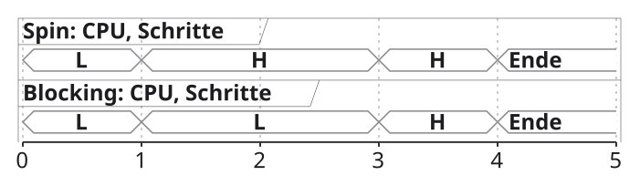
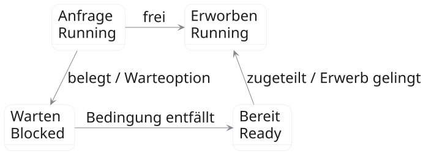
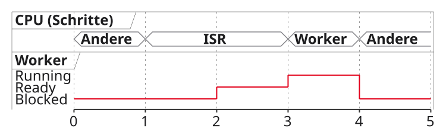
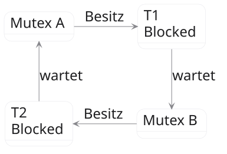
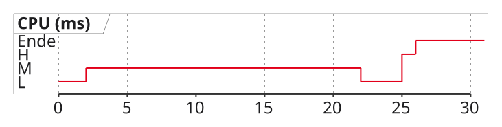
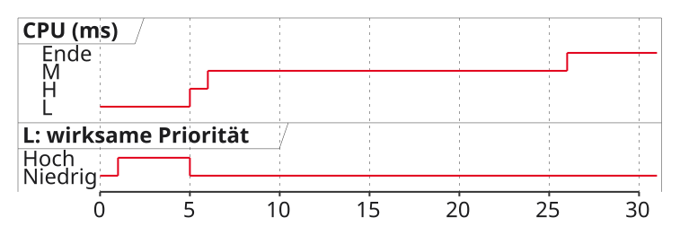

Von getrennten Threads zu gemeinsamen Ressourcen
Vorlesung 3: Threads unterbrechen, fortsetzen und warten
Heute: gemeinsame Daten und Geräte konsistent benutzen
Leitfrage: Wer darf wann auf dieselbe Ressource zugreifen?
Ein FreeRTOS-Kernel auf dem Cortex-M4; der Cortex-M7 bleibt beim bisherigen Grundstart.
Ein Thread ist der fortsetzbare Ablauf aus Vorlesung 3. FreeRTOS nennt die vom Kernel verwaltete Aufgabe Task. Der Kernel, also der Betriebssystemkern, kann einen laufenden Thread unterbrechen und einen höheren bereiten Thread auswählen. Das erleichtert schnelle Reaktionen, erzeugt aber neue Zugriffsmöglichkeiten auf dieselben Daten. Der unterbrochene Zugriff ist möglicherweise noch nicht fertig, während der nächste Thread schon denselben Wert benutzt.
Wir betrachten weiterhin genau einen FreeRTOS-Kernel auf dem Cortex-M4 des STM32H755. Der Cortex-M7 übernimmt den bisherigen System- und Startanteil und bearbeitet die hier geschützten Daten nicht. Eine Ressource kann ein Speicherobjekt, ein zusammengehöriges Wertepaar oder ein Ausgabegerät sein. Synchronisation bedeutet, die Zugriffe so abzustimmen, dass ihre beabsichtigte Bedeutung erhalten bleibt. Sie benötigen Zustände, Prioritäten und Warteaufrufe aus Vorlesung 3. Neue Sperr- und Signalobjekte werden hier eingeführt. Die Notizen erklären die Folien als zusammenhängenden Lerntext.
Drei Wartewerkzeuge aus dem Alltag
Mutex
ein Toilettenschlüssel
wer die Ressource besitzt
Binärer Semaphor
Klingel mit Merklicht
höchstens ein offener Hinweis
Zähl-Semaphor
Parkhaus mit drei Plätzen
Anzahl freier Plätze
Schützen, signalisieren oder zählen: zuerst den Zweck wählen.
Die Alltagsbilder geben eine erste Orientierung für den Schutz und die Übergabe gemeinsamer Ressourcen. Die Zustände bereit, laufend und wartend kennen Sie bereits aus Vorlesung 3. Ein Thread ist ein vom Betriebssystem verwalteter Ausführungsablauf. Eine Ressource ist hier etwas gemeinsam Nutzbares, etwa ein Ausgabegerät oder ein Speicherpuffer. Die drei Mechanismen lösen unterschiedliche Aufgaben; äußerlich ähnliches Warten macht sie nicht austauschbar. Die Analogie beschreibt den Zweck des jeweiligen Vertrags; seine technischen Aufrufregeln folgen im Verlauf dieses Termins.
Mutex kommt von Mutual Exclusion, gegenseitiger Ausschluss. Beim Toilettenschlüssel darf jeweils nur die Person mit dem Schlüssel den Raum benutzen. Unsere Besitzregel lautet: Wer ihn genommen hat, gibt ihn selbst zurück. Ein Mutex merkt entsprechend, welcher Thread ihn erfolgreich erworben hat. Alle Zugriffe auf die geschützte Ressource müssen sich an denselben Vertrag halten.
Der binäre Semaphor entspricht einer Klingel mit Merklicht: Ein Klingeln setzt den offenen Hinweis, die zuständige Person nimmt ihn an und setzt die Anzeige zurück. Mehrmaliges Klingeln bei bereits leuchtender Anzeige speichert keine Anzahl. Der meldende und der annehmende Teilnehmer dürfen verschieden sein; es gibt keine Mutex-Besitzregel. In dieser Signalverwendung beginnt der Semaphor leer.
Ein Zähl-Semaphor kann dagegen mehrere verfügbare Marken speichern. Das Parkhaus startet im Beispiel mit drei freien Plätzen. Jede Einfahrt braucht eine Marke, jede Ausfahrt gibt eine zurück. Bei null freien Plätzen darf der nächste Teilnehmer keinen Platz benutzen; er wartet oder kehrt je nach Warteoption erfolglos zurück. In den Detailbeispielen übertragen wir dies auf eine gemeinsame Ausgabe, einen Tasterhinweis und drei Messpuffer. Die Analogien versprechen weder eine bestimmte Bedienreihenfolge noch einen sofortigen Prozessorstart. Dazu müssen wir später Wartebedingung und Prozessorzuteilung unterscheiden.
Was Sie nach diesem Termin erklären können
Ein verlorenes Update Schritt für Schritt herleiten
Schutzumfang und kritischen Abschnitt festlegen
Besitzschutz, Ereignishinweis und Ressourcenzahl unterscheiden
Deadlock und Prioritätsinversion getrennt diagnostizieren
Warte- und Antwortzeiten ohne und mit Vererbung vergleichen
Ein verlorenes Update ist eine beabsichtigte Änderung, die durch einen späteren Zugriff mit veraltetem Ausgangswert überschrieben wird. Ein kritischer Abschnitt fasst die Zugriffe zusammen, die gemeinsam konsistent sein müssen. Ein Mutex ist eine Sperre mit Besitzer, ein Semaphor verwaltet verfügbare Berechtigungen, sogenannte Token. Ein binärer Semaphor hält höchstens ein Token, ein Zähl-Semaphor mehrere. Ein Thread-Flag ist dagegen ein Hinweisbit eines bestimmten Threads. Diese Begriffe werden an den Alltagsbildern und konkreten Abläufen eingeführt, bevor Schnittstellenfunktionen nötig sind.
Ein Deadlock ist eine Verklemmung durch gegenseitige Ressourcenabhängigkeiten. Prioritätsinversion bezeichnet hier das indirekte Verzögern einer höheren Aufgabe durch einen niedrigeren Ressourcenbesitzer. Priority Inheritance, Prioritätsvererbung, verändert zeitweise die wirksame Priorität des Besitzers. Wir prüfen, welche Verzögerung dadurch entfällt und welche bleibt.
Die Lernziele werden zuerst durch Papieraufgaben, anschließend durch einen kontrollierten Programmversuch überprüft. Es reicht nicht, den Namen eines Fehlers zu nennen: Sie müssen die gehaltene Ressource, den wartenden Thread und die mögliche Fortsetzung identifizieren. Die Zahlenbeispiele sind Modellrechnungen. Erfolgreiche Übersetzung und beobachtetes Boardverhalten sind davon getrennte Nachweise.
Vier Schulstunden mit Übung und Quiz
0–45 min
Alltagsbilder, Zugriffsfehler, Mutex: 25 min
Papier 1 und 2.1: 20 min
45–90 min
Semaphoren, Flags, Deadlock: 30 min
Papier 2.2–2.3 und 3: 15 min
90–135 min
Inversion und Versuch: 20 min
Papier 4: 15 min; Code: 10 min
135–180 min
Quiz und Abschluss: 20 min
Variantenvergleich: 25 min
Den funktionierenden CM4-Grundstand aus Vorlesung 3 vorbereiten.
Vier Schulstunden zu je 45 Minuten ergeben 180 Minuten Unterrichtszeit; etwaige Pausen werden zusätzlich organisiert. Die Tabelle ordnet die 52 Folien, das Übungsblatt und zehn Quizfragen zu einem Lernablauf. Die Alltagsbilder und der Flagvergleich gehören zu den angegebenen Erklärungsblöcken; ihre Beispiele erleichtern die anschließende Anwendung der technischen Regeln. Insgesamt sind 75 Minuten für Erklärungen und gemeinsame Auswertung, 50 Minuten für Papieraufgaben, 35 Minuten für Codeintegration und Versuche sowie 20 Minuten für Quiz und Abschluss vorgesehen. Nach dem ersten Block werden Aufgabe 1 und der Maskierungsbudget-Teil 2.1 bearbeitet. Nach dem zweiten folgen die Token-Teile 2.2 und 2.3 sowie der Deadlock in Aufgabe 3. Erst nach dem dritten Erklärblock wird die Inversionsrechnung aus Aufgabe 4 bearbeitet; danach beginnt die Codeintegration. Kurze Verständnisfragen sind Teil der gemeinsamen Erklärung.
CM4 bezeichnet den Projektteil für den Cortex-M4. Die Programmiertools STM32CubeMX und Visual Studio Code mit der STM32-Erweiterung sowie der Dual-Core-Grundstart aus Vorlesung 3 müssen vorbereitet sein. Neue Werkzeuginstallation und erstmalige Bootfehlersuche passen nicht verlässlich in die 20-minütige Integrationsphase. Das Labor untersucht einen neuen Anwendungsbaustein auf diesem Grundstand.
Steht keine passende Hardware zur Verfügung, wird der vorbereitete Versuch demonstriert und anhand derselben Zustands- und Zeitfragen ausgewertet. Eigene Hardwareausführung bleibt dann ausdrücklich nicht durchgeführt. Die Papieraufgaben sind vollständig unabhängig davon lösbar. Als Orientierung dient die Zeitplanung; entscheidend sind begründete Antworten und ein nachvollziehbarer Vergleich, nicht schnelles Durchblättern aller Folien.
Rückblick: bereit, laufend und wartend
Ready
könnte arbeiten, wartet auf Zuteilung
Running
dem Prozessor zugeteilter Thread
Blocked
sachliche Wartebedingung noch offen
Eine hohe Priorität hilft erst, wenn der Thread ausführbar ist. Auch ein Mutex-Warter kann Blocked sein.
Ready bedeutet ausführungsbereit, Running bedeutet zugeteilt und Blocked bedeutet wartend. Ein Thread ist ein fortsetzbarer Ablauf. Auf dem betrachteten Kern ist höchstens ein Thread dem Prozessor zugeteilt. Die höchste ausführungsbereite Priorität gewinnt; eine höhere angelegte Priorität wird nicht ausgewählt, solange ihr Thread Blocked ist. Interruptarbeit kann den laufenden Kontext unterbrechen, ohne dass damit zwei Threads auf demselben Kern parallel rechnen.
In Vorlesung 3 warteten Threads auf Zeit oder ein Hinweisbit. Heute kommt eine weitere Wartebedingung hinzu: Eine Ressource ist bereits von einem anderen Thread belegt. Ein Mutex ist die Sperre, die diesen Besitz verwaltet. Muss der anfordernde Thread darauf warten, ist er währenddessen Blocked. Der Besitzer kann daher trotz niedrigerer Priorität weiterarbeiten.
Diese Zustandsregel ist der Schlüssel zur späteren Prioritätsinversion. Wenn eine hohe Aufgabe am Mutex wartet, ignoriert der Scheduler sie nicht. Ihr Wartevertrag macht sie noch nicht ausführbar. Bevor wir diese Abhängigkeit berechnen, klären wir, welche gemeinsamen Daten überhaupt einen Schutzvertrag benötigen.
Was soll bei einem gemeinsamen Wertepaar wahr bleiben?
Sensorzustand: value und check.
Invariante: check gehört zum selben Update wie value.
Schreiber ändert beide Felder
Leser benötigt ein zusammengehöriges Paar
Einzeln gültige Werte können gemeinsam falsch sein
Schutzumfang ist eine Eigenschaft der Daten, nicht die Zahl der C-Zeilen.
Eine Invariante ist eine Eigenschaft, die an den für andere Teilnehmer sichtbaren Stellen erhalten bleiben soll. Unser Beispiel verwendet einen Sensorwert value und einen zugehörigen Prüfwert check. Der Prüfwert kann etwa aus derselben Messung berechnet sein. Die genaue Rechenfunktion ist für das Problem unwichtig; wichtig ist die Zugehörigkeit zum selben Update.
Ein Schreiber ändert zuerst value und danach check. Wird er dazwischen unterbrochen, kann ein Leser den neuen Wert zusammen mit dem alten Prüfwert erhalten. Beide Einzelwerte sind möglicherweise korrekt gespeichert, bilden aber keinen gültigen gemeinsamen Zustand. Ein Snapshot ist eine solche zusammengehörige Momentaufnahme.
Daher muss der Schutzvertrag das Ändern beider Felder und das konsistente Lesen beider Felder umfassen. Nur eine einzelne Schreibzeile zu schützen reicht nicht. Ein Mutex, eine Sperre mit Besitzer, ist später eine mögliche Lösung für beteiligte Threads. Er verhindert keine wilden Speicherzugriffe durch Teilnehmer, die ihn umgehen. Das Wertepaar zeigt die Motivation; zunächst untersuchen wir den noch kleineren Fall eines gemeinsamen Zählers.
Eine C-Zeile ist noch keine unteilbare Operation
/* C-Lehrbeispiel: kein korrekt synchronisierter Mehrthreadcode */ static volatile uint32_t counter = 5 u ; void Bump( void ) { ++; } Zwei beabsichtigte Erhöhungen sollen 7 ergeben. volatile macht daraus keinen gegenseitigen Ausschluss.
Der C-Code ist ein Lehrbeispiel für die problematische Operation, kein auszuführender unsynchronisierter Mehrthreadversuch. static gibt counter eine dauerhafte Lebensdauer. uint32_t ist ein vorzeichenloser 32-Bit-Typ. volatile verlangt beobachtbare Zugriffe auf das Objekt und verhindert bestimmte Optimierungen; es ist keine Synchronisationsoperation. Bump ist eine Hilfsfunktion, die den gemeinsamen Zähler um eins erhöhen soll.
Zwei vollständige, nacheinander ausgeführte Aufrufe würden den Startwert fünf auf sieben erhöhen. Die Schreibweise counter++ ist jedoch kein Beweis, dass die dafür nötige Wirkung gegenüber anderen Teilnehmern unteilbar erfolgt. Ein mögliches Maschinenbild besteht aus Lesen, Verändern und Zurückschreiben.
Im C-Sprachmodell können konkurrierende Zugriffe auf nichtatomare Objekte ohne passende Synchronisation einen Data Race bilden und undefiniertes Verhalten verursachen. Wir leiten deshalb im folgenden ausdrücklich ein vereinfachtes Maschinenmodell her, statt einen bestimmbaren Endwert jedes beliebigen C-Builds zu behaupten. Ein atomarer Datentyp oder ein korrekter Schutzvertrag wäre für tatsächlich gemeinsamen Programmcode erforderlich. Zuerst betrachten wir die einzelnen Schritte und den gesicherten Registerzustand.
Lesen, ändern, zurückschreiben
Mögliches Maschinenmodell für eine Erhöhung:
LDR: Speicherwert in ein Register ladenADD: Registerwert erhöhenSTR: Registerwert in den Speicher schreiben
Beim Kontextwechsel bleibt As Registerwert in As Kontext. B liest den aktuellen Speicherwert, nicht automatisch As Register.
LDR steht für einen Ladebefehl, ADD für Addition und STR für einen Speicherbefehl im hier betrachteten Cortex-M-Maschinenbild. Der genaue Compiler kann andere Befehlsfolgen erzeugen; ein Disassembly, also eine Rückübersetzung des konkreten Programms in Maschinenbefehle, liegt für dieses Beispiel nicht vor. Wir verwenden die drei Schritte als plausibles didaktisches Modell.
A liest den gemeinsamen Speicherwert in sein Register. Die Addition verändert zunächst nur dieses Register. Erst der Store schreibt den neuen Wert in den gemeinsamen Speicher. Ein Register ist eine lokale Prozessorablage des aktuell ausgeführten Kontextes. Beim Wechsel sichert der Port, die Prozessoranpassung des Kernels, den benötigten Zustand von A und lädt den Kontext von B.
Damit verliert A seinen vorbereiteten Wert nicht. B bekommt aber auch nicht automatisch diesen Wert. Wenn B denselben Speicher lädt, erhält es den zuletzt dort geschriebenen Stand. Diese Trennung von Register und gemeinsamem Speicher erklärt das verlorene Update. Der Kontextwechsel selbst ist also korrekt; das Problem entsteht im nicht abgestimmten Zugriffsvertrag der Anwendung.
Verlorenes Update: zwei Erhöhungen, nur eine Wirkung
Maschinenmodell, Startwert 5:
A liest und addiert
6
—
5
B liest und addiert
6, gesichert
6
5
B schreibt
6, gesichert
6
6
A schreibt
6
—
6
Erwartet 7, erhalten 6. Der letzte Store überschreibt eine Änderung.
Die Tabelle zeigt die Reihenfolge im vereinfachten Maschinenmodell. Der gemeinsame Speicher enthält zunächst fünf. A liest diesen Wert und addiert in seinem eigenen Register eins. Dort steht sechs, im Speicher weiterhin fünf. A wird nun unterbrochen, und sein Registerwert sechs bleibt im gesicherten Kontext erhalten.
B liest ebenfalls fünf aus dem Speicher und berechnet sechs. Sein Store legt sechs in den Speicher. Danach wird A fortgesetzt und schreibt seine bereits berechnete sechs zurück. Es wurden zwei Additionen ausgeführt, aber beide gingen von demselben alten Wert aus. Das abschließende Schreiben enthält keine Information über die inzwischen erfolgte Änderung von B.
Ein Lost Update, verlorenes Update, ist genau diese fehlende Wirkung einer beabsichtigten Erhöhung. Ein Prozessorabsturz oder HardFault, eine schwere Prozessorfehlerausnahme, ist dafür nicht nötig. Auch korrekt gesicherte Register lösen das Anwendungsproblem nicht. Die Tabelle beschreibt eine mögliche Verschachtelung, kein gemessenes Firmwarelisting. Ein Schutz muss die zusammengehörige Operation vom Lesen bis zum Zurückschreiben gegen die relevanten Teilnehmer zusammenhalten.
Papierfrage: Wo beginnt der notwendige Schutz?
A liest 5, berechnet 6 und wird unterbrochen. B erhöht den Speicher auf 6; A schreibt danach 6.
Welche Variante verhindert dieses verlorene Update?
Nur jeden Store einzeln schützen
As gesamtes Lesen–Ändern–Schreiben gegen B schützen
Nur volatile hinzufügen
Begründen Sie auch, wann B seinen Ausgangswert lesen darf.
Die Aufgabe verwendet das Maschinenmodell der vorigen Folie. Ein Store ist der Schreibbefehl in den gemeinsamen Speicher. volatile ist eine C-Typqualifikation für beobachtbare Zugriffe und stellt keinen gegenseitigen Ausschluss her. Wir fragen nach dem logischen Schutzumfang, nicht nach einem bestimmten noch nicht eingeführten Schnittstellenaufruf.
Variante eins genügt nicht. Ein einzelner geschützter Store verhindert zwar einen Eingriff während dieses Schreibschritts, aber beide Threads können vorher denselben veralteten Ausgangswert gelesen haben. Variante drei genügt ebenfalls nicht; die beabsichtigte Folge bleibt in mehrere Wirkungen zerlegt.
Variante zwei ist richtig, wenn B denselben Schutzvertrag einhält. A liest fünf, berechnet sechs und schreibt sechs, bevor B seine zugehörige Operation beginnt. B liest anschließend sechs und schreibt sieben. Umgekehrt wäre zuerst B und dann A ebenfalls korrekt. Der Schutz muss nicht festlegen, welcher der beiden als Erster läuft. Er muss verhindern, dass ihre zusammengehörigen Zugriffe sich in der fehlerhaften Weise überlappen. Diese Begründung ist wichtiger als die bloße Antwortnummer und wird im Übungsblatt nochmals als Papieraufgabe verwendet.
Atomarität und gegenseitiger Ausschluss
Atomare Operation: unteilbare Wirkung für den betrachteten Zugriff
Mutex: beteiligte Threads betreten denselben Schutzbereich nacheinander
volatile: weder atomare Erhöhung noch MutexEine atomare Einzelvariable schützt nicht automatisch ein Wertepaar
„Geschützt“ muss immer benennen, gegenüber wem und für welche Eigenschaft.
Eine atomare Operation hat gegenüber den dafür relevanten Zugriffen eine unteilbare Wirkung. Das ist von einer ganzen C-Zeile und vom Wort volatile zu unterscheiden. volatile hält Zugriffe beobachtbar, liefert aber nicht die Synchronisation einer atomaren Erhöhung. Eine tatsächlich verwendete atomare Operation muss zu Typ, Ausrichtung, Werkzeugkette und Einsatzfall passen; sie ist kein beliebiger Ersatz für einen Peripherietreiber.
Ein Mutex, Mutual Exclusion, stellt gegenseitigen Ausschluss zwischen Teilnehmern her, die denselben Mutex korrekt erwerben. Ein so geschützter Thread darf durchaus von anderer Arbeit unterbrochen werden. Diese andere Arbeit darf nur nicht entgegen dem Vertrag auf den geschützten Zwischenzustand zugreifen. Deshalb ist gegenseitiger Ausschluss nicht gleichbedeutend mit allgemein ausgeschalteten Interrupts.
Auch zwei separat atomare Feldzugriffe liefern nicht automatisch einen gemeinsamen Snapshot, also eine konsistente Momentaufnahme. Für das Sensorpaar aus value und check kann ein Leser zwischen den beiden Updates landen. Es ist daher notwendig, die gewünschte Eigenschaft und die Konkurrenten zu nennen. Die nächste Folie wendet diesen Gedanken auf Schreiber und Leser desselben Datenpaares an.
Leser gehören zum selben Schutzvertrag
/* C-Skizze: zusammengehörige Aktualisierung */ . value = new_value; . check = new_check; /* Ein Leser benötigt beide Werte derselben Aktualisierung. */ Nur den Schreiber zu schützen reicht nicht, wenn der Leser den Mutex umgeht.
Privater Snapshot: unter Schutz kopieren, danach außerhalb weiterrechnen.
Die C-Skizze zeigt zwei Zuweisungen an das gemeinsame Objekt shared. value und check sind seine zusammengehörigen Felder; new_value und new_check stammen nach Annahme aus derselben Aktualisierung. Die Skizze enthält noch keine vollständige Initialisierung oder Synchronisation und ist nicht als fertiges Programm angegeben.
Ein Mutex ist eine Sperre mit Besitzer. Wenn der Schreiber beide Zuweisungen unter diesem Mutex ausführt, der Leser seine Zugriffe aber ohne denselben Mutex durchführt, kann der Leser dennoch den Zwischenstand sehen. Die Hardware kennt den logischen Datenvertrag nicht und verbietet diesen Zugriff nicht automatisch. Der Schutz ist erst wirksam, wenn alle beteiligten Zugriffe ihn einhalten.
Ein sinnvolles Muster ist deshalb, die beiden Felder unter Schutz in eine private Struktur zu kopieren. Danach wird der Mutex freigegeben, und längere Berechnung auf der privaten Kopie läuft außerhalb. Der private Snapshot bleibt die einmal gelesene zusammengehörige Momentaufnahme, ohne die gemeinsame Ressource während der gesamten Berechnung zu halten. Der Umfang des Schutzes ergibt sich aus der Invariante, also der zu erhaltenden Eigenschaft, und nicht daraus, ob der Teilnehmer schreibt oder liest.
Der Schutzradius endet nicht automatisch am Chiprand
beteiligte Threads auf CM4
gemeinsamer Mutex
Thread und Interruptbehandler
kurze passende Maskierung oder Übergabe
DMA oder anderer Kern
eigener Hardware-/Speichervertrag
Ein CM4-Mutex ist keine Hardware-Sperre für DMA oder CM7.
CM4 und CM7 bezeichnen die Projektteile für Cortex-M4 und Cortex-M7. Ein Mutex gehört zur Verwaltung eines bestimmten Kernels. Die beteiligten Threads dieses Kernels können ihn erwerben und so einen gemeinsamen Schutzbereich organisieren. Ein anderer Kern benutzt diesen Vertrag nicht automatisch.
DMA bedeutet Direct Memory Access, direkter Speicherzugriff durch einen Hardwarecontroller. Dieser Controller führt keinen Mutex-Acquire aus und kann während des Threadschutzes weiter auf Speicher zugreifen. Ein Interruptbehandler ist ebenfalls kein gewöhnlicher Thread, der auf denselben Mutex warten darf. Für solche Konkurrenten sind andere Verträge nötig, etwa eine geeignete kurze Maskierung oder eine nichtblockierende Übergabe an einen zuständigen Thread.
Wir entwerfen heute keinen vollständigen Mehrkern- oder DMA-Speicherschutz. Die Tabelle begrenzt den Gültigkeitsbereich der Einkernbeispiele. Einen Namen wie ProtectedBuffer zu vergeben reicht nicht als Beweis, dass jeder mögliche Schreiber ausgeschlossen ist. Die erste Entwurfsfrage lautet daher: Wer greift wirklich auf diese Daten zu? Die zweite lautet: Welche dieser Teilnehmer halten die gewählte Schutzregel tatsächlich ein? Erst dann lässt sich der kritische Abschnitt korrekt festlegen.
Den kritischen Abschnitt klein und vollständig halten
Eigene Daten vorbereiten
Schutz erfolgreich erwerben
Gemeinsame Invariante lesen oder ändern
Schutz freigeben
Private Verarbeitung oder periodisches Warten
Kurz halten heißt nicht, benötigte gemeinsame Zugriffe ungeschützt auszulagern.
Ein kritischer Abschnitt umfasst die Zugriffe, deren gemeinsame Bedeutung erhalten bleiben muss. Eine Invariante ist diese zu erhaltende Eigenschaft, etwa das zusammengehörige Wertepaar. Der Ablauf beginnt mit privater Vorbereitung, die keine geschützten gemeinsamen Daten voraussetzt. Erst nach erfolgreichem Erwerb darf die gemeinsame Ressource benutzt werden.
Innerhalb des Schutzes wird die notwendige Operation vollständig durchgeführt. Anschließend wird freigegeben. Längere Berechnung auf einer bereits kopierten privaten Momentaufnahme und periodisches Warten gehören normalerweise danach. Kürzen bedeutet also, unnötige Besitzdauer zu entfernen, nicht den notwendigen Vertrag zu zerreißen.
Ein Betriebssystem-Warteaufruf unter gehaltenem Mutex ist nicht immer syntaktisch verboten. Er kann aber die Ressourcenwartezeit stark verlängern, weil der Besitzer in dieser Zeit nicht weiterarbeitet. Ein blockierendes Gerät braucht deshalb einen bewusst geplanten Abschlussvertrag. Im ersten Schutzvergleich beginnen wir mit einem naheliegenden Eigenbau: aktiv auf ein Flag zu warten. Dabei zeigen sich zwei unterschiedliche Fehler, eine Race beim Erwerb und ein Fortschrittsproblem beim Warten.
Ein Lock-Flag ist noch kein korrekter Lock
/* Absichtlich falscher C-Lehrcode */ while ( lock != 0 u ) { } = 1 u ;
Prüfung und Setzen sind getrennt
Zwei Teilnehmer können „frei“ sehen
Ein atomares Test-and-Set wäre ein anderer Mechanismus
Selbst korrekter Spin kann den Besitzer am Freigeben hindern
lock ist im C-Lehrcode ein gemeinsames Flag. Die Schleife prüft, ob es belegt ist, und bleibt bei einem nichtnull Wert aktiv. Erst nach einer erfolgreichen Prüfung wird es auf eins gesetzt. Zwischen Prüfung und Zuweisung kann ein anderer Teilnehmer ebenfalls null sehen. Beide können anschließend glauben, sie hätten den Schutz erworben. Dieses Check-then-Set ist selbst eine Race Condition, also ein von der Verschachtelung abhängiger Fehler.
Eine korrekt atomare Test-and-Set-Operation würde Prüfen und Setzen als unteilbaren Erwerb organisieren. Der gezeigte Code ist damit nicht gleichzusetzen und wird nicht als funktionsfähiger Eigenbau verwendet. Spin bedeutet jedoch auch bei einem korrekt erworbenen Lock aktives Warten: Der wartende Thread bleibt ausführbar und beansprucht Prozessorzeit.
Auf einem präemptiven Einkernsystem kann dadurch eine höhere wartende Aufgabe genau den niedrigeren Besitzer verdrängen, der den Lock erst freigeben müsste. Die Korrektheit des Erwerbs und die Möglichkeit des Fortschritts sind verschiedene Fragen. Für unser Threadressourcenmodell ist der nächste Schritt deshalb der Vergleich von Spin und echtem Blockieren.
Hoher Spinner oder blockierter Warter?
L hält die Ressource; H ist höher priorisiert und fordert sie an.

Spin: H verhindert Ls Release. Blocking: H wartet, L kann freigeben.
Die beiden Spuren zeigen getrennte Modellversuche auf jeweils einem Kern. Die Achse zählt schematische Schritte, keine gemessenen Millisekunden. L ist die niedrigere Aufgabe und besitzt beziehungsweise hält die Ressource zu Beginn. H ist höher priorisiert und wird bei Schritt eins zur Anforderung freigegeben.
In der oberen Spin-Spur läuft danach H und prüft aktiv den belegten Lock. L bleibt Ready, also ausführungsbereit, bekommt aber als niedrigere Aufgabe keinen Prozessor. H verhindert dadurch den notwendigen Release, die Freigabe durch L. Das künstliche Ende der Darstellung bei vier bedeutet nicht, dass der Lock dann tatsächlich frei geworden wäre. Interrupts könnten währenddessen weiterlaufen.
Im unteren Blocking-Versuch wird H nach erfolgloser Anforderung Blocked, also wartend. L kann die restliche Arbeit ausführen und bei Schritt drei freigeben; dann läuft H. Es gibt in dieser vereinfachten Spur keine mittelpriore dritte Aufgabe. osThreadYield, das erneute Auswählen über die CMSIS-RTOS2-Schnittstelle, macht einen hohen Spinner nicht Blocked und hilft L daher nicht. Diese Unterscheidung bereitet die kernelverwalteten Sperrobjekte vor.
Interruptmaskierung hat ein Latenzbudget
Angenommene Reaktionsfrist \(D=10\,\text{µs}\) :
\[
R=W_{\mathrm{Maske}}+L_{\mathrm{Eintritt}}+C_{\mathrm{ISR}}
=(8+2+3)\,\text{µs}=13\,\text{µs}
\]
Die Frist wird im Modell verfehlt.
Bei sonst gleichen Annahmen verbleiben höchstens \(5\,\text{µs}\) Maskierungsrest.
Eine Interruptmaskierung verhindert die Behandlung der betroffenen Interruptanforderungen für eine bestimmte Dauer. Die IRQ, Interrupt Request, kann anstehen, ohne schon behandelt zu werden. ISR heißt Interrupt Service Routine, der Interruptbehandler. Die Formel beschreibt ein vereinfachtes Reaktionsmodell ohne weitere Verzögerungsquellen. D ist die angenommene Frist von zehn Mikrosekunden ab dem Ereignis bis zum Ende der geforderten Reaktion.
\(W_{\mathrm{Maske}}\) ist die beim Ereignis verbleibende Maskierungszeit, hier acht Mikrosekunden. \(L_{\mathrm{Eintritt}}\) ist die anschließende Eintrittsverzögerung von zwei Mikrosekunden. \(C_{\mathrm{ISR}}\) ist der benötigte Behandleranteil von drei Mikrosekunden. Die Summe R beträgt 13 Mikrosekunden und überschreitet D. Für dieselben übrigen Anteile ergibt sich das Restbudget zu zehn minus zwei minus drei gleich fünf Mikrosekunden.
Die Werte sind Lehrannahmen, keine Cortex-M4-Messung. PRIMASK, das Register zur Maskierung konfigurierbarer Interrupts, und BASEPRI, die Dringlichkeitsschwelle für ausgewählte Interrupts, haben unterschiedliche Schutzbereiche. Die FreeRTOS-Portmakros werden nicht blind durch einfaches Aus- und Einschalten ersetzt. Eine Maskierung hält insbesondere DMA, direkten Hardware-Speicherzugriff, nicht an. Blockierendes Warten oder lange Ausgabe gehört nicht in einen solchen kurzen Abschnitt.
Blockierender Erwerb gibt dem Besitzer Fortschritt
Schematischer Erfolgspfad; ein Timeout hat einen eigenen Fehlerpfad.

Die Abbildung zeigt einen schematischen erfolgreichen Erwerb und die zugehörigen Threadzustände. Ein Thread ist ein fortsetzbarer Ablauf. Running bedeutet dem Prozessor zugeteilt, Blocked bedeutet wartend und Ready ausführungsbereit. Die vier Kästen stellen zwei unterschiedliche laufende Phasen und die beiden möglichen Wartezustände dar; die Pfeile nennen die Ursachen.
Bei einer freien Ressource kann die laufende Anfrage direkt erfolgreich werden. Ist sie belegt und eine Warteoption angegeben, verwaltet der Kernel, der Betriebssystemkern, die Wartebedingung und der Thread wird Blocked. Er führt dann keine Polling-Schleife aus. Andere bereite Threads, insbesondere der Ressourcenhalter, können weiterarbeiten. Bei entfallender Bedingung wird der Warter Ready. Erst nach zulässiger Zuteilung kann er seinen erfolgreichen Erwerb fortsetzen; die Skizze zeigt diesen Erfolgspfad, keine Garantie gegen erneute Belegung in jedem Backend.
Eine sofortige Anfrage ohne Warten oder ein endlicher Timeout, der Ablauf einer Wartefrist, kann dagegen mit Fehler zurückkehren. Dieser Fehler erteilt keine Zugriffsberechtigung und ist im Diagramm nicht als erfolgreicher Eintritt gezeichnet. Die Freigabe von Prozessorzeit allein garantiert außerdem noch keine Zuteilung an einen niedrigen Halter gegenüber mittlerer Arbeit. Dafür benötigen wir im späteren Inversionsvergleich eine weitere Eigenschaft des Mutex.
Mutex: Der Besitzer gibt die Ressource frei
Praxis: Temp=23 und Akku=80% teilen dieselbe serielle Ausgabe.
frei
noch kein Besitzer
von A erworben
A ist Owner
B fordert an
B wartet oder erhält Fehler
A gibt frei
ein anderer darf erwerben
Ein Mutex um die ganze Nachricht; nur der Besitzer gibt frei.
Mutex ist die Kurzbezeichnung für Mutual Exclusion, gegenseitigen Ausschluss. Owner bedeutet Besitzer. Das Alltagsbild ist der gemeinsam genutzte Toilettenschlüssel: Wer ihn genommen hat, gibt ihn selbst zurück. Nach erfolgreichem Erwerb merkt sich der Kernel, welchem Thread der Mutex gehört. Ein anderer Thread kann ihn nicht auf dem normalen Besitzerpfad freigeben. In der Tabelle ist A der Besitzer und B zunächst nur ein Anfordernder.
Acquire bedeutet erwerben. Wenn B bei belegtem Mutex wartet, wird B Blocked, also wartend, oder erhält bei einer entsprechend gewählten kurzen Warteoption einen Fehler. Release bedeutet freigeben. Erst As passende Freigabe erlaubt einen neuen erfolgreichen Erwerb. Ob der geweckte Thread sofort tatsächlich läuft, hängt zusätzlich von seiner Priorität und dem aktuellen Kontext ab.
Eine serielle Ausgabe überträgt Zeichen nacheinander über einen gemeinsamen Kanal. Im praktischen Beispiel senden zwei Threads zeichenweise die vollständigen Nachrichten Temp=23 und Akku=80% über dieselbe serielle Ausgabe. Jeder erwirbt denselben Mutex vor dem ersten Zeichen und gibt ihn nach dem letzten Zeichen seiner Nachricht selbst frei. So vermischen sich die beiden Zeichenfolgen nicht. Ein eigener Mutex je Thread würde den gemeinsamen Kanal nicht gegeneinander schützen. Bei asynchroner Gerätebenutzung muss der Schutz bis zum tatsächlichen Ende der geschützten Nutzung reichen; diesen Fall betrachten wir später genauer. Das Beispiel veranschaulicht den Vertrag und ist keine zusätzliche Hardwareaufgabe.
Dieses Besitzrecht wird durch die Schnittstelle kontrolliert, nicht durch eine allgemeine Hardware-Sperre auf jede geschützte Speicheradresse. Greift B direkt auf die Daten zu, ohne zu erwerben, verletzt B den Anwendungsvertrag. Deshalb müssen auch konsistente Leser denselben Mutex benutzen. Die Besitzinformation ist außerdem die Voraussetzung dafür, später die Priorität genau desjenigen Threads anzuheben, der eine höhere wartende Aufgabe aufhält.
Einen CMSIS-Mutex anlegen
/* C: nach osKernelInitialize, vor dem Threadstart */ const osMutexAttr_t attr = { . name = "SensorPair" , . attr_bits = osMutexPrioInherit}; = osMutexNew(& attr); if ( sensor_mutex == NULL) { (); } Die Attribute beschreiben den Mutex; ein gültiges Handle ist Voraussetzung.
CMSIS heißt Common Microcontroller Software Interface Standard. CMSIS-RTOS2 ist seine Betriebssystem-Schnittstelle, über die wir FreeRTOS benutzen. Der C-Ausschnitt erzeugt den SensorPair-Mutex nach erfolgreichem osKernelInitialize, der Kernelinitialisierung, und vor der Freigabe der verwendenden Threads. osMutexAttr_t ist die Attributstruktur, name ihr lesbarer Name und attr_bits die Sammlung der angeforderten Eigenschaften.
osMutexPrioInherit fordert Prioritätsvererbung an. Diese Eigenschaft wird später erläutert; sie ist hier die gewünschte Ressourcenschutzkonfiguration. osMutexNew liefert ein Handle vom Typ osMutexId_t, die Kennung des erzeugten Objekts. NULL ist ein ungültiger Nullzeiger und bedeutet fehlgeschlagene Anlage. Error_Handler ist die Projektfehlerbehandlung und darf den Betrieb mit ungültigem Handle nicht einfach fortsetzen.
Die Attributstruktur selbst ist noch kein erworbener Mutex. Erfolgreiche Anlage erzeugt zunächst das verfügbare Objekt, nicht den dauerhaften Besitz durch den anlegenden Thread. Die tatsächlich verfügbaren Eigenschaften hängen auch vom eingesetzten Adapter ab. Insbesondere wird das Vererbungsbit nicht als sicherer Abschaltknopf für native FreeRTOS-Mutexe betrachtet. Für die normale Nutzung muss anschließend der Erwerbsstatus geprüft werden.
Acquire-Erfolg ist die Eintrittskarte
osMutexAcquire(m, 0), belegtsofort Fehler, kein Zugriff
osMutexAcquire(m, 5)bis zu 5 Kernelticks warten
osMutexAcquire(m, osWaitForever)ohne eigene Wartefrist warten
erfolgreich, osOK
Ressource benutzen, danach freigeben
Nach fehlgeschlagenem Acquire weder zugreifen noch Release ausführen.
Acquire heißt erwerben. m ist das gültige Mutexhandle, also die Kennung einer Sperre mit Besitzer. Die Aufrufe stammen aus CMSIS-RTOS2, der Betriebssystem-Schnittstelle des Common Microcontroller Software Interface Standard. Die zweite Angabe ist die Warteoption in Kernelticks. Ein Tick ist die logische Zeiteinheit des Kernels und nicht unabhängig von der Frequenz eine Millisekunde.
Null fordert einen sofortigen Versuch ohne Blockieren an. Bei belegtem Mutex erhält der Aufrufer einen Ressourcenfehler. Fünf ist eine endliche Tickwartezeit; sie kann mit Erfolg oder einem Timeout enden. osWaitForever hat keine eigene Zeitablaufgrenze. Keine dieser Warteoptionen ersetzt die Deadline, die Fertigstellungsfrist der gesamten Anwendungsaufgabe.
osOK ist der erfolgreiche Status. Erst dann besitzt der Thread den Mutex und darf den geschützten Zugriff ausführen. Bei einem Fehler hat er den Mutex nicht erworben und darf ihn deshalb nicht freigeben. Bei Erfolg müssen normale und fehlerhafte Verarbeitungspfade die passende Freigabe erreichen. Der konkrete Status unterscheidet ungültige Parameter, Ressourcenmangel und Timeout; diese Fälle dürfen nicht alle als erfolgreiche Nutzung behandelt werden.
Fehlerpfade müssen den Besitz berücksichtigen
/* C: Snapshot-Helfer; m und shared sind gültig initialisiert */ int CopyPair( Pair * out) { if ( osMutexAcquire( m, 5 u ) != osOK) { return 0 ; } * out = shared; if ( osMutexRelease( m) != osOK) { (); } return 1 ; } Warte- und Rechenarbeit nach der privaten Kopie außerhalb des Mutex.
Der C-Ausschnitt ist eine Hilfsfunktion, keine vollständige Thread-Eintrittsfunktion. Pair bezeichnet den Typ des zusammengehörigen Datenpaares; shared ist das gemeinsame Objekt, out der gültige Zeiger auf den privaten Ausgabespeicher und m das initialisierte Mutexhandle. Diese Voraussetzungen sind auf der Folie ausdrücklich angegeben. Der Aufrufer darf keinen ungültigen out-Zeiger übergeben, und alle konkurrierenden Zugriffe auf shared müssen denselben Mutex verwenden.
osMutexAcquire kommt aus CMSIS-RTOS2, der Betriebssystem-Schnittstelle des Common Microcontroller Software Interface Standard. Es versucht hier den Erwerb für fünf Kernelticks. Bei Misserfolg liefert CopyPair null und führt weder Kopie noch Freigabe aus. Bei Erfolg wird das ganze Paar unter Besitz in den privaten Speicher kopiert. osMutexRelease gibt anschließend frei. Ein unerwarteter Freigabefehler gehört in Error_Handler, die Projektfehlerbehandlung. Für diesen Ausschnitt gilt ausdrücklich: Diese Fehlerbehandlung hält den normalen Betrieb an und kehrt auf diesem Pfad nicht zurück.
Die Eins zeigt die erfolgreiche Kopie an. Der aufrufende Thread kann mit seiner privaten Momentaufnahme weiterrechnen oder periodisch warten, ohne den gemeinsamen Schutz dafür festzuhalten. Ein frühes return nach erfolgreichem Acquire und vor Release wäre dagegen ein vergessener Besitzpfad. Für komplexere Verarbeitung werden deshalb klare gemeinsame Aufräumpfade benötigt.
Rekursiver Mutex: zweimal nehmen, zweimal freigeben
Mit explizit erlaubter Rekursion, immer derselbe Owner A:
frei
0
A acquire
1
A acquire erneut
2
A release
1
A release erneut
0
B darf erst nach vollständiger Freigabe erwerben.
Rekursion bedeutet hier, dass derselbe Besitzer denselben Mutex wiederholt erwerben darf. Owner ist der Besitzer und Mutex die Sperre für gegenseitigen Ausschluss. Die Tabelle zählt die Rekursionstiefe, nicht die verfügbaren Token eines Semaphors. A wird beim ersten Acquire Besitzer mit Tiefe eins. Sein zweiter erfolgreicher Acquire erhöht auf zwei. Ein Release senkt lediglich auf eins; A besitzt den Mutex weiterhin. Erst das zweite passende Release erreicht null und öffnet ihn für B.
CMSIS-RTOS2, die Betriebssystem-Schnittstelle des Common Microcontroller Software Interface Standard, verwendet dafür das Attribut osMutexRecursive. Es ist von Prioritätsvererbung zu unterscheiden. Ohne erlaubte Rekursion ist das erneute Warten desselben Besitzers kein harmloses Verschachteln: Mit unbegrenzter Warteoption kann er auf sich selbst warten, ein Self-Deadlock. Bei endlicher Warteoption kann stattdessen ein Fehler zurückkommen.
Eine klare Aufrufstruktur kann Rekursion oft vermeiden. Beispielsweise erwirbt nur die äußere Funktion den Mutex, während die inneren Helfer den bereits geltenden Schutz voraussetzen. Rekursiver Erwerb ersetzt weder vollständige Freigaben noch eine feste Reihenfolge verschiedener Sperren.
Semaphor: verfügbare Token statt Besitzer
Zähler zwischen 0 und max_count
Acquire verbraucht ein Token
Release stellt ein Token bereit
Kein gespeicherter Owner des Tokens
Ein anderer Teilnehmer kann Release ausführen
Ein Token enthält keine Nutzdaten.
Ein Semaphor ist ein Kernelobjekt zur Verwaltung einer Anzahl verfügbarer Berechtigungen. Diese Berechtigungen heißen Token. max_count ist die maximale Anzahl gespeicherter Token. Acquire, Erwerb, vermindert bei Erfolg den verfügbaren Zähler. Release, Freigabe, erhöht ihn, soweit die Kapazität nicht ausgeschöpft ist.
Im Gegensatz zum Mutex speichert der Semaphor keinen Owner, also keinen Besitzer, der genau dieses Token später selbst zurückgeben müsste. Das ist für Signalisierung nützlich: Ein Interrupt oder ein anderer Thread kann Arbeit melden, und ein wartender Thread verbraucht den Hinweis. Die Kerneloperation ist dabei an ihre jeweiligen Kontextregeln gebunden.
Ein Token ist keine Nachricht und auch nicht automatisch die Identität eines freien Puffers. Es kann nur ausdrücken, dass eine Anzahl von Berechtigungen oder Arbeitshinweisen verfügbar ist. Wenn Nutzdaten oder konkrete Platzidentitäten benötigt werden, muss der Entwurf diese separat verwalten. Eine Nachrichtenwarteschlange, Queue, wird in Vorlesung 5 behandelt. Zunächst klären wir, welche Bedeutung ein Semaphor mit nur einem möglichen gespeicherten Token und seinem Anfangswert hat.
Binärer Semaphor: der Anfangswert hat eine Bedeutung
Praxis: Ein Tasterinterrupt meldet Arbeit an eine LED-Task.
ein Ressourcentoken anfangs verfügbar
osSemaphoreNew(1, 1, NULL)
Ereignis noch nicht eingetreten
osSemaphoreNew(1, 0, NULL)
Maximum 1; Zähler entweder 0 oder 1. Für den Tasterhinweis gilt: Anfangswert 0, Maximum 1.
Binär bedeutet hier, dass der verfügbare Zähler nur null oder eins betragen kann. Die C-Aufrufe verwenden CMSIS-RTOS2, die Betriebssystem-Schnittstelle des Common Microcontroller Software Interface Standard. osSemaphoreNew erhält Maximum, Anfangszahl und optionale Attribute. NULL ist der Nullzeiger für hier nicht angegebene Zusatzattribute.
Mit osSemaphoreNew(1, 1, NULL) steht sofort ein Token bereit. Das passt im kontrollierten Vergleich zu einer zunächst verfügbaren exklusiven Ressource. Mit osSemaphoreNew(1, 0, NULL) ist zunächst kein Token vorhanden. Das passt zu einem Ereignis, das noch nicht eingetreten ist. Ein wartender Worker, die verarbeitende Aufgabe, soll also nicht schon ohne Ereignis losarbeiten.
Im Tasterbeispiel stellt der zulässige Interruptbehandler eine Marke bereit. Die LED-Task, also der Thread für die Leuchtdiode, wartet auf diese Marke, schaltet nach erfolgreichem Erwerb die LED und wartet wieder. LED bedeutet Light Emitting Diode, Leuchtdiode. Der meldende und der empfangende Teilnehmer sind verschieden; ein Mutex mit Besitzer wäre dafür ungeeignet. Erst ISR-Ende und Prozessorzuteilung erlauben dem geweckten Thread die tatsächliche Verarbeitung. ISR heißt Interrupt Service Routine, Interruptbehandler. Das ist die technische Entsprechung der Klingel mit Merklicht aus dem Einstieg.
Nach einem Release bei leerem Zähler steht eins bereit. Ein weiteres Release vor Verbrauch erreicht nicht den Wert zwei, sondern scheitert an der Kapazität. Das Ergebnis muss ausgewertet werden. Ebenso speichert ein einzelnes Thread-Flag aus Vorlesung 3 nicht automatisch jede wiederholte Flanke. Der Semaphor ist damit ein nützlicher Hinweisspeicher, aber keine grenzenlose Ereigniswarteschlange und kein Mutexbesitzrecht.
Zähl-Semaphor: drei Berechtigungen, keine Platzadressen
Drei Messpuffer: osSemaphoreNew(3, 3, NULL).
Start
3
A, B, C erwerben je eines
0
D versucht mit Timeout 0
0, Fehler
B gibt frei, niemand wartet
1
D versucht später erneut
0, Erfolg
Der Zähler kennt die Anzahl freier Puffer, nicht ihre Adressen.
Der Zähl-Semaphor erlaubt mehr als ein verfügbares Token. osSemaphoreNew ist der Anlageaufruf der CMSIS-RTOS2-Schnittstelle des Common Microcontroller Software Interface Standard. Die Argumente drei und drei legen das Maximum und die Anfangszahl fest; NULL bedeutet hier keine Zusatzattribute.
A, B und C erwerben jeweils ein Token. Danach steht der Zähler bei null. D versucht Acquire mit Timeout null und erhält sofort einen Fehler; D ist dadurch kein auf ein zukünftiges Token wartender Thread. Wenn B später freigibt und kein anderer wartet, steigt die verfügbare Anzahl auf eins. Erst Ds neuer Aufruf verbraucht dieses Token erfolgreich.
Das praktische Beispiel zählt drei freie Messpuffer, also Speicherbereiche für je einen Messblock. A, B und C sind Messaufträge, die jeweils eine Berechtigung und anschließend einen konkreten freien Puffer übernehmen. D darf bei fehlender Berechtigung keinen Puffer benutzen. Die Zahl drei entspricht den drei freien Plätzen der Parkhausanalogie; der Semaphor kennt wie die Anzeige nicht die genaue Platznummer.
Bei der Rückgabe wird zuerst der Puffer wieder in eine separat geschützte Verwaltung aufgenommen und danach das Token freigegeben. Umgekehrt folgt auf den erfolgreichen Token-Erwerb die Entnahme einer konkreten freien Pufferidentität. Eine Marke ohne tatsächlich freien Puffer wäre ein Protokollfehler. Die gewünschte Bilanz muss die Anwendung sicherstellen, denn der Semaphor speichert keinen Mutexbesitzer und überträgt auch keine Messdaten.
Die Tabelle nennt ausdrücklich keine blockierten zusätzlichen Wartenden. Ein tatsächlich wartender anderer Thread könnte nach Release ebenfalls bereit werden und das Token später verbrauchen. D hat durch seinen früheren Fehler kein reserviertes Recht auf dieses Token. Ein Pufferpool mit drei konkreten Speicherplätzen benötigt außerdem eine eigene Identitätsverwaltung. Die Zahl eins sagt nicht, welcher Platz frei ist. Ebenso ist bei vollem Zähler ein weiteres Release ein Kapazitätsfehler, keine vierte Berechtigung.
Signalisierung aus dem Interrupt
Worker wartet am leeren Semaphor; erlaubte ISR stellt ein Token bereit.

Der Worker läuft nach ISR-Ende und zulässigem Wechsel, nicht gleichzeitig mit der ISR.
ISR heißt Interrupt Service Routine, Interruptbehandler. CPU steht für Central Processing Unit, zentrale Verarbeitungseinheit. Worker ist der verarbeitende Thread. Die Abbildung zeigt oben die Prozessorbelegung und unten den Workerzustand. Die Achse zählt schematische Schritte und ist keine Millisekundenmessung. Andere bezeichnet beliebige andere Arbeit; der Prozessor muss vor dem Ereignis nicht im Leerlauf gewesen sein.
Der Worker ist bei leerem Semaphor Blocked, also wartend. In der ISR wird osSemaphoreRelease aufgerufen. Dieser Aufruf stellt ein Token bereit und kann den Worker Ready, also ausführungsbereit, machen. Die ISR muss fertig werden; erst nach dem zulässigen Kontextwechsel ist der Worker Running und verarbeitet das erfolgreich erworbene Token. Danach wartet er erneut.
Die Aufrufe gehören zu CMSIS-RTOS2, der Betriebssystem-Schnittstelle des Common Microcontroller Software Interface Standard. osSemaphoreRelease darf nur im unterstützten Interruptkontext, mit gültigem Handle und kernelverträglicher Interruptpriorität verwendet werden. osSemaphoreAcquire ist aus einer ISR nur mit Timeout null zulässig, also ohne Blockieren. Mutex-Acquire und Mutex-Release sind aus der ISR unzulässig. Damit bleibt Besitzschutz von Ereignisübergabe getrennt.
Ein volles Tokenfach braucht einen Fehlerpfad
Binärer Ereignissemaphor, anfangs 0:
erstes Release
Token gespeichert
zweites Release
Kapazitätsfehler
erfolgreicher Acquire
ein Token verbraucht
„Zwei Flanken“ bedeutet hier nicht automatisch „zwei Verarbeitungen“. Ungültiger Handle und Kapazitätsfehler sind verschiedene Fehler.
Ein binärer Semaphor hat eine Kapazität von einem gespeicherten Token. Die Tabelle setzt voraus, dass zwischen den beiden Releases noch kein Acquire, also kein Tokenverbrauch, stattfindet und kein anderer wartender Verbraucher das Token bereits entnimmt. Das erste Release von null auf eins gelingt. Das zweite kann die Kapazität nicht überschreiten und liefert einen Ressourcenfehler. Der folgende erfolgreiche Acquire erhält genau ein Token.
Release stellt ein Token bereit. Acquire verbraucht es. Diese Operationen stammen aus CMSIS-RTOS2, der Betriebssystem-Schnittstelle des Common Microcontroller Software Interface Standard. Ein Rückgabestatus ungleich osOK muss diagnostiziert werden: Ungültige Kennung und volles Tokenfach dürfen nicht ungeprüft dieselbe Erklärung bekommen.
Für die Anwendung muss festgelegt sein, ob mehrere Ereignisse zusammengefasst werden dürfen. Reicht ein ausstehender Reaktionswunsch, kann ein binärer Speicher passen. Müssen Ereignisse einzeln gezählt werden, sind Kapazität und Überlaufpolitik anders auszulegen. Auch ein größerer Zähler ist endlich. Ein Token enthält außerdem weiterhin keine Nutzdaten. Diese Grenzen erklären, warum der Vergleich zum Mutex nicht nur aus zwei unterschiedlichen Funktionsnamen besteht.
Thread-Flag oder binärer Semaphor?
Im Kurs: CMSIS-RTOS2-Thread-Flags auf FreeRTOS.
Hinweis
Bit im Zielthread
Token in eigenem Objekt
Verbraucher
dieser Zielthread
einer der Erwerber
Hinweisarten
verschiedene Bits möglich
eine verfügbare Marke
Wiederholung vor Annahme
Bit bleibt gesetzt
höchstens ein Token
Beide dienen hier der Signalisierung. Ein Mutex schützt mit Besitz.
CMSIS heißt Common Microcontroller Software Interface Standard; RTOS2 bezeichnet die zweite Version seiner Betriebssystem-Schnittstelle. Ein Thread, auch Task genannt, ist ein verwalteter Ausführungsablauf. Mit Thread-Flag meinen wir hier ein Hinweisbit eines bestimmten Threads. osThreadFlagsSet setzt Bits gezielt beim angegebenen Zielthread. osThreadFlagsWait wartet auf Bits des aufrufenden Threads; er wartet damit nicht auf die privaten Thread-Flags einer anderen Task. Im verwendeten CMSIS-FreeRTOS-Adapter werden diese Bits über eine Task-Benachrichtigung des FreeRTOS-Betriebssystemkerns abgebildet. Native Task-Benachrichtigungen haben weitere Betriebsarten, darunter Zählverhalten; unsere Aussage bezieht sich auf die Bitverwendung.
Ein binärer Semaphor ist dagegen ein eigenes Kernelobjekt, auf dessen Handle mehrere Verbraucher warten können. Handle bedeutet die Kennung des Objekts. Eine bereitgestellte Marke ermöglicht genau einen erfolgreichen Erwerb. Ein Thread-Flag adressiert unmittelbar einen Zielthread; beim Semaphor kann eine Gruppe von verarbeitenden Threads auf dasselbe Objekt warten, und jeweils ein Erwerber verbraucht die Marke. Beides hat keinen Mutexbesitzer und ersetzt keinen vereinbarten Ressourcenschutz.
In beiden Fällen können wiederholte Meldungen zusammenfallen. Ein bereits gesetztes Bit erneut zu setzen bleibt eine gültige Bitsetzung. Eine weitere Semaphorfreigabe bei bereits voller Kapazität scheitert dagegen mit einem Ressourcenfehler. Der erfolgreiche Flag-Wait löscht die angenommenen Bits in unserer Standardeinstellung automatisch; der erfolgreiche Semaphorerwerb verbraucht eine Marke. Mehrere Flagbits erlauben außerdem verschiedene Hinweisarten und Wartebedingungen, nicht automatisch eine Anzahl gleicher Ereignisse.
Der Ausdruck FreeRTOS-Flag ist ohne Kontext mehrdeutig. FreeRTOS bietet auch Event-Gruppen, also eigene Objekte mit Ereignisbits, auf die mehrere Tasks warten können. Das Setzen solcher Bits kann mehrere passende Wartebedingungen erfüllen und mehrere Tasks wecken. Das ist eine andere Semantik als der Verbrauch einer einzelnen Semaphormarke. Das Tasterbeispiel aus Vorlesung 3 verwendet CMSIS-Thread-Flags, keine Event-Gruppe. Für eine konkrete Auswahl prüfen wir daher Zielthread, Anzahl möglicher Verbraucher, Hinweisarten und zulässigen Interruptkontext. Danach vergleichen wir den Signalisierungszweck noch einmal mit dem Besitzschutz durch einen Mutex.
Mutex und Semaphor nebeneinander
Bedeutung
Besitz einer Ressource
verfügbare Token
fremdes Release
nicht gültig
möglich
Acquire/Release in ISR
unzulässig
nach API-Regeln möglich
Prioritätsvererbung
bei geeignetem Mutex
nicht beim binären Vergleich
Anfang
verfügbar
Anzahl nach Zweck
Kein Cast zwischen Handletypen als Ersatz für den richtigen Objektwechsel.
API bedeutet Application Programming Interface, Programmierschnittstelle. ISR bedeutet Interrupt Service Routine, Interruptbehandler. Ein Mutex speichert den Ressourcenbesitzer und unterstützt in der passenden Kernelkonfiguration Prioritätsvererbung. Ein Semaphor zählt verfügbare Token ohne diese Besitzerbeziehung. Gerade deshalb kann ein anderer Teilnehmer, etwa eine zugelassene ISR, ein Token bereitstellen.
In CMSIS-RTOS2, der Betriebssystem-Schnittstelle des Common Microcontroller Software Interface Standard, sind Mutex-Acquire und Mutex-Release aus einer ISR unzulässig. Ein Semaphor-Release ist im unterstützten Kontext vorgesehen, Semaphor-Acquire dort nur ohne Warten mit Timeout null. Die konkrete FreeRTOS-Interruptpriorität muss diese Kernelaufrufe zusätzlich erlauben.
Im Laborvergleich hält ein binärer Semaphor mit Anfangszahl eins denselben vereinbarten exklusiven Zugriffsvertrag wie die Mutexvariante, besitzt aber nicht deren Vererbung. Daraus entsteht keine Empfehlung, normale Ressourcensperren generell durch Semaphoren zu ersetzen. Beim Wechsel müssen Typ, Anlage und Erwerbs-/Freigabefunktionen gemeinsam passen. Ein Cast, eine Typumwandlung des Handles, ändert das Kernelobjekt nicht in den gewünschten anderen Typ. Auch korrekt erworbene Mutexe können im nächsten Block durch Ressourcenabhängigkeiten Probleme erzeugen.
Deadlock: ein geschlossener Wartezyklus
T1 hält A und wartet auf B; T2 hält B und wartet auf A.

Beide Threads sind Blocked. Andere Arbeit kann weiterlaufen.
Deadlock heißt Verklemmung. T1 und T2 sind zwei Threads, also fortsetzbare Aufgaben. A und B sind jeweils ein exklusiver Mutex mit genau einem möglichen Besitzer. Die Abbildung verbindet die wartenden Threadzustände mit den Ressourcenabhängigkeiten, ist aber keine Schedulerzeitachse. Die Kästen mit T1 und T2 zeigen den Zustand Blocked; die beiden anderen Kästen stehen für die Mutexressourcen. Ein Pfeil vom Mutex zum Thread bedeutet Besitz. Ein Pfeil vom Thread zum Mutex bedeutet Warten auf dessen Erwerb.
T1 hat A erfolgreich genommen. T2 hat B erfolgreich genommen. Nun fordert T1 B und T2 A jeweils mit Warten an. Beide sind Blocked, also wartend. T1 kann B nicht bekommen, weil T2 es hält, und T2 kann A nicht bekommen, weil T1 es hält. Niemand in diesem geschlossenen Zyklus erreicht auf normalem Weg die nötige Freigabe.
Das ist nicht gleichbedeutend mit einem vollständigen Prozessorstillstand. Andere Threads und Interrupts können weiterlaufen. Das Diagramm belegt die Verklemmung für dieses Modell mit einzelnen exklusiven Ressourcen und ohne eigenen Abbruchpfad. Bei Ressourcen mit mehreren Instanzen ist ein beliebiger Zyklus nicht automatisch derselbe Nachweis. Die Struktur muss also zusammen mit dem Ressourcenmodell gelesen werden.
Die vier Coffman-Bedingungen richtig lesen
Mutual exclusion: jeweils exklusive Ressource
Hold and wait: halten und auf weitere Ressource warten
No preemption: kein zwangsweiser Ressourcenentzug
Circular wait: geschlossener Wartezyklus
„No preemption“ betrifft hier die Ressource, nicht die Prozessorzuteilung.
Die vier klassischen Coffman-Bedingungen beschreiben Voraussetzungen eines Ressourcen-Deadlocks. Mutual Exclusion bedeutet gegenseitigen Ausschluss: A und B können jeweils nur einem Besitzer gehören. Hold and Wait bedeutet Halten und Warten: Ein Teilnehmer hält bereits eine Ressource, während er eine weitere fordert. No Preemption bedeutet hier, dass die gehaltene Ressource nicht einfach zwangsweise entzogen wird. Circular Wait ist der geschlossene Abhängigkeitszyklus.
Im vorigen Zwei-Mutex-Beispiel sind alle vier Bedingungen erfüllt. T1 und T2 haben jeweils einen exklusiven Mutex, halten diesen während ihres weiteren Wartens und können die fehlende Freigabe nicht durch einen anderen normalen Schritt ersetzen. Beide Abhängigkeiten schließen sich zum Zyklus.
Die bekannte präemptive Prozessorzuteilung aus Vorlesung 3 ist damit nicht verboten. Der Scheduler könnte einem fortsetzbaren Kontext den Prozessor zuweisen, doch beide Threads bleiben wegen der fehlenden Ressource Blocked, also wartend. Mehr Zeitscheiben lösen die Ressourcenabhängigkeit nicht. Ebenso reicht das bloße Vorliegen struktureller Möglichkeiten nicht als Beweis, dass jeder beobachtete Ablauf schon verklemmt ist. Der konkrete Zustand muss die entsprechenden Abhängigkeiten tatsächlich enthalten.
Eine feste Erwerbsordnung verhindert den Zyklus
Globale Regel: immer zuerst A, danach B.
T1 besitzt A und kann B anfordern
T2 muss zuerst A anfordern und besitzt B dabei noch nicht
T1 kann weiterarbeiten und beide freigeben
Erst danach bekommt T2 seine Ressourcen
Auch intern verwendete Bibliothekssperren gehören in die Ordnung.
Eine globale Erwerbsordnung ist eine für alle beteiligten Zugriffspfade geltende Reihenfolge. Acquire bedeutet erwerben. Für unser Beispiel legen wir fest, dass jeder Thread zuerst Mutex A und danach Mutex B nimmt. Ein Mutex ist eine exklusive Sperre mit Besitzer.
Wenn T1 bereits A besitzt, darf T2 nicht zuerst B nehmen und anschließend A fordern. T2 wartet stattdessen schon auf A, ohne B zu halten. T1 kann somit B erwerben, die gemeinsame Arbeit erledigen und anschließend beide freigeben. T2 kann danach A und B in derselben Reihenfolge nehmen. Der mögliche Gegensatz der Erwerbsrichtungen wurde beseitigt; dadurch kann der vorherige Zweierzyklus nicht entstehen.
Freigabe in umgekehrter Reihenfolge ist eine hilfreiche Konvention, aber die entscheidende Vermeidungsregel liegt beim Erwerb. Verwendete Bibliotheken können selbst weitere Locks, also Sperren, enthalten. Werden diese ohne Berücksichtigung ihrer Reihenfolge aufgerufen, kann trotz sauber aussehender äußerer Funktionen erneut ein Zyklus entstehen. Die Ordnung muss daher den tatsächlich benutzten Pfad abdecken. Sie ist keine Lösung für jede mögliche zeitliche Verzögerung; mittelpriore Verdrängung des Besitzers wird später getrennt betrachtet.
Timeout ohne Aufräumen ist keine Lösung
T1 besitzt A; Erwerb von B läuft in einen Timeout.
Danach nötig:
B nicht benutzen
bereits gehaltenes A passend freigeben
teilweise Änderungen konsistent behandeln
Wiederholungsregel festlegen
Sofortige symmetrische Wiederholung kann erneut ohne Fortschritt enden.
Ein Timeout ist der Ablauf einer endlichen Warteoption. Er erlaubt dem Aufrufer, einen fehlgeschlagenen Erwerb zu erkennen und einen Fehlerpfad auszuführen. Im Beispiel besitzt T1 Mutex A, erhält aber B nicht. B gehört deshalb weiterhin nicht zu seinen gültigen Zugriffsmöglichkeiten.
Die bereits gehaltene Sperre A wird auf dem passenden Aufräumpfad freigegeben. Falls die Anwendung vorher gemeinsame Daten teilweise verändert hat, muss sie deren Konsistenz ebenfalls wiederherstellen oder den unvollständigen Zustand nach einem ausdrücklich vereinbarten Vertrag behandeln. Ein einfaches return mit gehaltenem A verlagert das Problem nur zu den nächsten Anfordernden.
Auch eine Wiederholung benötigt eine Regel. Wenn zwei Threads immer gleichartig aufräumen und sofort wieder denselben Konflikt erzeugen, können sie zwar ausgeführt werden, aber keine Nutzarbeit fertigstellen. Das heißt Livelock, lebender Ablauf ohne Fortschritt, und ist von Deadlock, blockiertem Wartezyklus, zu unterscheiden. Ein Timeout ist somit ein Erkennungs- und Behandlungspfad, kein automatischer Deadlockfreiheitsbeweis. Das folgende Zeitproblem hat überhaupt keinen Ressourcenzyklus und verlangt deshalb eine andere Diagnose.
Prioritätsinversion: H wartet auf L, M verzögert L
Prioritätsordnung \(H>M>L\) :
L hält den von H benötigten Lock
H fordert an und wird Blocked
M benutzt den Lock nicht, verdrängt aber L
Hs Fortschritt hängt nun indirekt von M ab
Kein Wartezyklus: L könnte weiterarbeiten, wenn es zugeteilt würde.
H, M und L heißen hier hohe, mittlere und niedrige Aufgabe. Die Prioritätsordnung H größer als M größer als L beschreibt ihre normale Dringlichkeit im Scheduler. Ein Lock ist der gemeinsame exklusive Ressourcenvertrag. L hält ihn bereits, bevor H anfordert.
H wird bei der Anforderung Blocked, also wartend. Es ist trotz höchster Basispriorität noch nicht ausführbar. L könnte die Ressource freigeben, muss dafür aber seine restliche Arbeit ausführen. Wenn M bereit ist, gewinnt M gegenüber L und verzögert diese notwendige Fortsetzung. M benötigt den Lock selbst nicht. Hs Antwort wird trotzdem indirekt durch M verlängert.
Das ist die klassische verlängerte Prioritätsinversion. Eine niedrigere Ressourcenabhängigkeit existiert schon beim Warten auf L; M macht den zusätzlichen Verzögerungsanteil besonders sichtbar. Es ist kein Deadlock, weil L keinen Zyklus weiterer Ressourcenbedingungen abwartet und bei Zuteilung weiterarbeiten könnte. Es ist auch nicht die reine Starvation aus Vorlesung 3 ohne Ressource. Bei begrenztem M ist die Verzögerung endlich, kann aber die Deadline verletzen. Mit dauerhaft bereit bleibendem M gäbe es im einfachen Modell keine endliche Fortschrittsschranke für L.
Ein Parametersatz für beide Vergleiche
Ein Kern; feste Prioritäten \(H>M>L\) ; Wechsel- und API-Kosten \(0\) .
L, hält Lock
0 ms
5 ms bis Freigabe des Locks
H, benötigt denselben Lock
1 ms
danach 1 ms
M, ohne Lockzugriff
2 ms
20 ms
Für H: \(D_H=10\,\mathrm{ms}\) , absolute Deadline \(d_H=11\,\mathrm{ms}\) .
CPU bedeutet Central Processing Unit, zentrale Verarbeitungseinheit. API heißt Application Programming Interface, Programmierschnittstelle. Die Tabelle setzt einen Kern, feste Prioritäten und vernachlässigte Wechsel- sowie Erwerbskosten voraus. Die Jobs sind einmalige Aktivierungen, keine unbegrenzt fortgesetzten Hintergrundschleifen.
L wird bei null Millisekunden freigegeben, erwirbt den Lock sofort und benötigt fünf Millisekunden Prozessorarbeit bis zu dessen Freigabe. H wird bei einer Millisekunde freigegeben, fordert denselben Lock an und benötigt nach erfolgreichem Erwerb eine Millisekunde eigene Arbeit. M wird bei zwei Millisekunden bereit, benötigt 20 Millisekunden Prozessorarbeit und benutzt den Lock nicht. Vor diesen Jobfreigaben sind H und M noch nicht ausführbar.
Die relative Deadline von H ist \(D_H\) gleich zehn Millisekunden. Sie wird ab Hs Jobfreigabe gemessen; die absolute Deadline \(d_H\) liegt daher bei einer plus zehn gleich elf Millisekunden. Diese Zahlen bleiben in beiden Vergleichen unverändert. Eine Pause bis zu einer Wanduhrzeit wäre kein Ersatz für das angegebene Prozessorpensum, weil die Uhr auch bei Verdrängung weiterläuft. Wir ändern nur den Schutzmechanismus und betrachten zuerst den Fall ohne Prioritätsvererbung.
Ohne Vererbung: die mittlere Aufgabe liegt dazwischen
Binärer Ressourcentoken ohne Prioritätsvererbung.

H fordert bei 1 ms an und wartet. M benötigt weiterhin seine vollen 20 ms.
Die Abbildung zeigt die Prozessorbelegung im Ein-Kern-Lehrmodell ohne Prioritätsvererbung. Die horizontale Achse ist Zeit in Millisekunden. Die vertikalen Stufen benennen die jeweils laufende Aufgabe, keine zusätzliche Prozessorkapazität. L, M und H sind niedrige, mittlere und hohe Aufgabe. Ein binärer Semaphor mit Anfangszahl eins dient hier als vereinbarter Ressourcentoken; er speichert keine Besitzerpriorität zur Vererbung.
Von null bis einer Millisekunde rechnet L. H fordert bei einer Millisekunde an, findet den Token belegt und wird Blocked, also wartend. Sein als dauerlos angenommener Versuch ist kein eigener breiter Laufbalken. L rechnet daher noch von eins bis zwei. Bei zwei wird M bereit und verdrängt L bis 22 Millisekunden. M benötigt genau seine unveränderten 20 Millisekunden.
L hatte bisher zwei seiner fünf Millisekunden Arbeit ausgeführt. Von 22 bis 25 erledigt es die restlichen drei und stellt den Token wieder bereit. H kann von 25 bis 26 seine eigene Arbeit erledigen. Ende bezeichnet den Abschluss der betrachteten einmaligen Jobs, keinen Hardwarehalt. Die Spur zeigt keine gleichzeitig rechnenden Threads. Die nächste Frage trennt aus diesem Ablauf Hs Ressourcenwartezeit und gesamte Antwortzeit.
Papierfrage: Wartezeit und Antwortzeit auseinanderhalten
Ohne Vererbung:
H fordert den Lock bei 1 ms an
H erwirbt bei 25 ms
H ist bei 26 ms fertig
Absolute Deadline: 11 ms
Berechnen Sie Lockwartezeit, Antwortzeit und Fristüberschreitung. Warum ist die Antwortzeit nicht 26 ms?
Die Aufgabe bleibt beim gleichen einmaligen Modell mit H als höchstpriorer Aufgabe. Lock bedeutet den vereinbarten exklusiven Ressourcenschutz. Hs Jobfreigabe und Anforderung liegen hier beide bei einer Millisekunde. Der erfolgreiche Erwerb liegt bei 25 Millisekunden, seine Fertigstellung bei 26.
Die Ressourcenwartezeit ist Erwerbszeit minus Anforderungszeit, also 25 minus eins gleich 24 Millisekunden. Hs Antwortzeit \(R_H\) ist Fertigstellung minus Jobfreigabe, also 26 minus eins gleich 25 Millisekunden. Die absolute Deadline \(d_H\) beträgt elf Millisekunden; die Fertigstellung liegt damit 15 Millisekunden nach der Frist. Alternativ zeigt \(R_H\) größer als \(D_H\) mit 25 gegenüber zehn Millisekunden dieselbe Verletzung.
26 Millisekunden ist Hs absolute Fertigstellungszeit auf der gemeinsamen Achse, nicht seine Antwortzeit. Der Bezugsbeginn ist entscheidend. Die 24 Millisekunden Warten enthalten vier Millisekunden restliche L-Arbeit und 20 Millisekunden M-Arbeit. Hs eigene Millisekunde kommt danach hinzu. Die Zahlen lassen sich daher auch durch Summieren dieser getrennten Anteile prüfen. Lassen Sie insbesondere den Unterschied zwischen absolutem Zeitpunkt und Zeitabstand begründen.
Prioritätsvererbung hebt den Besitzer an
Priority Inheritance, hier PIP:
H wartet am Mutex von L
L erhält vorübergehend Hs wirksame Priorität
H bleibt Blocked
M kann L im Haltefenster nicht mehr verdrängen
Nach passender Freigabe kann H arbeiten
Die Anhebung beginnt mit Hs Warten, nicht bereits mit Ls Erwerb.
Priority Inheritance heißt Prioritätsvererbung. PIP ist die hier benutzte Kurzform für Priority Inheritance Protocol, das entsprechende Vererbungsprotokoll. Der Mutex ist die Ressourcensperre mit gespeichertem Besitzer. Ls Basispriorität ist seine normale niedrige Stufe. Die effektive Priorität ist die Stufe, mit der der Scheduler den Thread aktuell behandelt.
Wenn H auf den von L gehaltenen Mutex warten muss, erhält L im einfachen Modell Hs höhere effektive Priorität. H bleibt Blocked, also wartend; die Vererbung überträgt nicht den Ressourcenbesitz an H. L führt die noch nötige Arbeit aus, damit die Wartebedingung tatsächlich verschwinden kann. M liegt darunter und darf L in diesem Fenster nicht zusätzlich verdrängen.
Im angegebenen Beispiel beginnt die Anhebung bei einer Millisekunde, wenn H anfordert und wartet. Vorher hat L nur seine Basispriorität. Wir betrachten genau einen gehaltenen Mutex. Bei dessen Freigabe kann H die Ressource erwerben. Das Protokoll beseitigt nicht die verbleibende kritische Arbeit von L; diese ist weiterhin Voraussetzung für Hs Fortschritt. Es verhindert hier den zusätzlichen Umweg über die mittelpriore Arbeit.
Mit Vererbung: L beendet zuerst den gehaltenen Abschnitt
Gleiche Jobs und CPU-Pensen; nun Mutex mit Vererbung.

L gibt bei 5 ms frei; H beendet seine Arbeit bei 6 ms.
CPU bedeutet Central Processing Unit, zentrale Verarbeitungseinheit. Die obere Spur zeigt deren Belegung als Stufen mit den jeweils laufenden Aufgabennamen, die untere Ls wirksame Priorität. L, M und H sind niedrige, mittlere und hohe Aufgabe. Die Achse ist Zeit in Millisekunden. Die Basispriorität von L bleibt niedrig; nur die vom Scheduler verwendete effektive Priorität wird vorübergehend angehoben.
Von null bis eins rechnet L mit eigener Priorität. H wartet bei eins am Mutex, sodass L hoch erbt. M wird bei zwei bereit, kann L jetzt aber nicht verdrängen. L beendet bis fünf seine insgesamt fünf Millisekunden kritischer Arbeit und gibt den einzigen gehaltenen Mutex frei. Ls wirksame Priorität fällt in diesem einfachen Fall wieder ab. H läuft von fünf bis sechs.
Danach führt M von sechs bis 26 seine unveränderten 20 Millisekunden aus. Die Linie von Ls niedriger Priorität ist nach der Freigabe nur ein Prioritätszustand, kein zusätzlicher Laufbalken. H wartet auf den Mutex vier Millisekunden und hat ab seiner Freigabe eine Antwortzeit von fünf Millisekunden. Die Vererbung macht also nicht M oder L rechnerisch kürzer, sondern verändert die Reihenfolge im nötigen Haltefenster.
Gleiche Arbeit, andere Antwort auf die Frist
H wartet auf Lock
24 ms
4 ms
Antwortzeit \(R_H\)
25 ms
5 ms
H fertig
26 ms
6 ms
Deadline 11 ms
verfehlt
eingehalten
gesamte CPU-Arbeit
26 ms
26 ms
Die restlichen 4 ms von L verschwinden auch mit Vererbung nicht.
Die Tabelle vergleicht dieselben Jobs, Freigaben und Prozessorpensen. CPU steht für Central Processing Unit, zentrale Verarbeitungseinheit. H ist die hohe Aufgabe und L der niedrige Ressourcenhalter. Ein Lock bezeichnet den gemeinsamen exklusiven Vertrag. Die Wartezeit endet beim erfolgreichen Erwerb; die Antwortzeit \(R_H\) endet erst bei Hs Fertigstellung und beginnt mit seiner Jobfreigabe.
Ohne Vererbung sind es 24 Millisekunden Ressourcenwartezeit und 25 Millisekunden Antwortzeit. Mit dem einzelnen vererbenden Mutex sind es vier und fünf Millisekunden. Die absolute Deadline von elf Millisekunden wird im zweiten Modell eingehalten, im ersten nicht. Die Gesamtarbeit bleibt fünf Millisekunden L plus eine H plus 20 M, also 26 Millisekunden.
Diese Gleichheit ist eine Kontrollgröße: Hs Verbesserung wurde nicht durch heimlich kürzere M-Arbeit erzeugt. Gleichzeitig bleibt Ls Rest von vier Millisekunden als Blockierungsanteil bestehen. Er wird nicht zusätzlich nochmals als M-Interferenz gezählt. Die Tabelle beweist die Frist nur für dieses klar begrenzte Modell mit vernachlässigten Verwaltungskosten. Für eine reale Anwendung müssen Ausführungszeiten, weitere Ressourcen, Interruptlast und Konfiguration begründet einbezogen werden.
Was Prioritätsvererbung nicht repariert
Kein Öffnen eines Deadlock-Zyklus
Keine Beschleunigung einer laufenden Hardwareübertragung
Keine allgemeine Fairness für niedrigere Tasks
Keine beliebig kurze Sperrdauer
FreeRTOS mit mehreren gehaltenen Mutexen: Rückstufung nicht naiv pro Release annehmen
Prioritätsvererbung verbessert die Zuteilung eines fortschrittsfähigen Ressourcenbesitzers, wenn eine höhere Aufgabe an seinem Mutex wartet. Ein Deadlock ist dagegen ein geschlossener Ressourcenwartezyklus. Auch eine höhere effektive Priorität gibt den Teilnehmern darin nicht die fehlende Ressource. Starvation ist das Aushungern ausführbarer niedrigerer Aufgaben; die Vererbung ist keine allgemeine Fairnessgarantie.
Wartet der Besitzer selbst auf eine Hardwareübertragung, bleibt diese Wartebedingung bestehen. Eine höhere Taskpriorität erhöht weder die Leitungsrate noch macht sie einen blockierten Besitzer unabhängig vom Gerät ausführbar. Lange kritische Arbeit muss weiterhin begrenzt werden. PIP, Priority Inheritance Protocol, ist somit eine Komponente des Entwurfs und kein vollständiger Fristnachweis.
FreeRTOS verwendet bei mehreren gleichzeitig gehaltenen Mutexen eine vereinfachte Vererbungsverwaltung. Man darf nicht für jeden einzelnen Release automatisch eine sofortige Rückkehr zur Basispriorität behaupten. Auch das CMSIS-RTOS2-Attribut osMutexPrioInherit ist im öffentlich geprüften CMSIS-FreeRTOS-Adapter nicht der sichere Abschaltknopf: Dort werden native Mutexe standardmäßig mit Vererbung erzeugt. CMSIS heißt Common Microcontroller Software Interface Standard. Die im STM32-Projekt eingesetzte Adapter- und Kernelversion bleibt deshalb zu prüfen.
Eine ganze Nachricht ist eine gemeinsame Operation
UART-Ausgabe zweier Threads:
Eigene Nachricht in privatem Puffer vorbereiten
Gemeinsamen UART-Mutex erwerben
Ganze Nachricht bis zum sicheren Abschluss senden
Mutex im Besitzerthread freigeben
Erst danach periodisch warten
Ungeschützt: Mischtext, HAL_BUSY oder schon serialisierte Ausgabe sind mögliche Befunde.
UART steht für Universal Asynchronous Receiver/Transmitter, die asynchrone serielle Schnittstelle. Ein Mutex ist eine exklusive Sperre mit Besitzer. Die Anforderung lautet hier, dass jede logische Nachricht vollständig und zusammenhängend gesendet wird. Ein privater Puffer löst den Besitz des eigenen Nachrichtentexts; der gemeinsame Mutex organisiert dagegen die Benutzung des Geräts.
printf ist eine C-Formatierungsfunktion. Ihr tatsächlicher Gerätepfad hängt von Retargeting, also der Zuordnung zur Zielausgabe, Bibliothekspuffern und dem verwendeten Treiber ab. HAL bedeutet Hardware Abstraction Layer, die Hardware-Abstraktionsschicht. HAL_BUSY ist ein Treiberstatus für eine bereits belegte Operation. Ohne Schutz kann es Mischtext, abgewiesene oder verlorene Ausgabe geben; eine bereits serialisierende Bibliothek kann das sichtbare Problem auch anders erscheinen lassen. Buchstabensalat wird daher nicht als zwingendes Boardergebnis behauptet.
Alle konkurrierenden Ausgaben müssen denselben Vertrag verwenden. Auch die private Formatierung ist nur dann wirklich unabhängig, wenn die verwendete Bibliothek ihre eigenen gemeinsamen Zustände korrekt behandelt. Wir benutzen die Ausgabe hier als Anwendungsbeispiel. Der folgende Laborvergleich isoliert Prioritätsinversion ohne UART und printf, damit deren zusätzliche Wartezeiten das Ergebnis nicht überdecken.
Kurzer Quellcode kann lange Besitzdauer bedeuten
Lehrannahme: UART mit 115200 Baud, Format 8N1, 100 Nutzbytes.
\[
t_{\mathrm{Leitung}}=
\frac{100\cdot(1+8+1)}{115200}\,\mathrm{s}
\approx8{,}68\,\mathrm{ms}
\]
Das ist Leitungszeit, keine automatisch gleiche CPU-Arbeit. Software, Warten und weitere Gerätebedingungen kommen hinzu.
UART ist die asynchrone serielle Schnittstelle, ausgeschrieben Universal Asynchronous Receiver/Transmitter. Baud ist die Symbolrate. Im betrachteten binären Format entspricht ein Symbol einem Leitungsbit. 8N1 bedeutet acht Datenbits, kein Paritätsbit und ein Stoppbit. Zusammen mit dem Startbit ergibt das zehn Leitungsbits je Nutzbyte.
Für 100 angenommene Nutzbytes entstehen daher 100 mal zehn gleich 1000 Leitungsbits. Die Division durch 115200 Bits pro Sekunde ergibt ungefähr 0,0086806 Sekunden. Auf zwei Dezimalstellen in Millisekunden gerundet sind das 8,68 Millisekunden. Es werden keine zusätzlichen Pausen oder Flusskontrollbedingungen angenommen. Diese Lehrrechnung ist keine Boardmessung.
Je nach Treibermodus kann der Prozessor während eines Teils dieser Zeit aktiv warten oder andere Arbeit ausführen. Die Leitung und eventuell der Puffer bleiben dennoch benutzt. Deshalb ist eine kurze C-Funktion nicht automatisch ein kurzer Besitzabschnitt. Die angenommene ganze Nachricht muss gegen konkurrierende Benutzer geschützt bleiben, solange ihre relevante Nutzung besteht. Prioritätsvererbung ändert die Leitungsgeschwindigkeit nicht. Das gilt besonders, wenn die Startfunktion einer asynchronen Übertragung bereits vor deren Abschluss zurückkehrt.
Asynchroner Start ist noch kein Abschluss
IT-/DMA-Transfer starten
Besitzer hält Ressource und gültigen Puffer
Gerät arbeitet weiter
Startfunktion kann schon zurückgekehrt sein
Abschluss oder sicherer Abbruch bestätigt
Thread darf Nutzung beenden
Mutex freigeben
Besitzerthread, nicht der Callback-ISR
Ein Timeout allein macht den noch benutzten Puffer nicht wieder frei.
IT bezeichnet im STM32-Treiberkontext die interruptgesteuerte Übertragung, DMA bedeutet Direct Memory Access, direkten Hardware-Speicherzugriff. Der erfolgreiche Start einer solchen UART-Übertragung ist nicht dasselbe wie ihr sicherer Abschluss. UART ist die asynchrone serielle Schnittstelle. Die Tabelle zeigt Verantwortlichkeiten, keine numerische Zeitmessung.
Der Besitzerthread hält den Mutex, die Sperre mit Besitzrecht, und stellt einen gültigen unveränderten Puffer bereit. Die Hardware kann nach Rückkehr der Startfunktion weiter aus diesem Puffer lesen. Ein Callback aus einer ISR, Interrupt Service Routine, darf dem Thread einen zulässigen Abschluss-Hinweis übergeben, etwa ein Token. Er gibt nicht den CMSIS-Mutex des Threads frei; CMSIS ist der Common Microcontroller Software Interface Standard.
Bei einem Timeout muss geklärt sein, ob die Hardware tatsächlich nicht mehr zugreift. Erst bestätigter Abschluss oder ein passender sicherer Abbruch erlaubt Wiederverwendung und Freigabe. Späte Meldungen dürfen nicht als Abschluss einer neuen Übertragung fehlinterpretiert werden. Ob ein DMA-Abschluss schon das letzte gesendete Bit bezeichnet, hängt vom konkreten Treibervertrag ab. Wir bauen heute keine vollständige Abbruchsteuerung, sondern grenzen die einfache Mutexverwendung gegen diese Geräteverantwortung ab.
Fallstudie: Diagnose braucht die echte Abhängigkeit
Mars Pathfinder, 1997:
Wiederholte Resets führten zur Untersuchung des zeitlichen Ablaufs
Ein zeitkritischer Pfad wartete auf einen niedrigprioren Mutexbesitzer
Mittelpriore Arbeit verlängerte dessen Haltedauer
Prioritätsvererbung wurde für die betroffenen Mutexe aktiviert
Die Modellwerte 6 und 26 ms sind keine Mars-Messzeiten.
Mars Pathfinder ist die historische Fallstudie zur praktischen Bedeutung von Prioritätsinversion. Glenn E. Reeves beschrieb die Ereignisse im Bericht vom 15. Dezember 1997. Wiederholte Resets wurden nicht einfach als Beweis eines beliebigen Hardwarefehlers genommen. Zeitlich geordnete Aufzeichnung, Trace, und Nachstellung halfen, die tatsächliche Ressourcenabhängigkeit zu erkennen.
Im beschriebenen VxWorks-System konnte ein zeitkritischer Ausführungspfad durch einen Mutex aufgehalten werden, dessen niedrigerer Besitzer von mittelpriorer Arbeit verdrängt wurde. Ein Mutex ist die Sperre mit Besitzer. Der dortige Begriff mutex semaphore bezeichnet diesen Ressourcenschutz und ist nicht mit unserem FreeRTOS-binären Ressourcentoken ohne Vererbung gleichzusetzen. Die getestete Änderung aktivierte Vererbung für die betroffenen Mutexe; sie erforderte Prüfung ihrer Auswirkungen.
Die Fallstudie motiviert die Diagnosemethode, nicht zusätzliche erfundene Modellzahlen. Die Fertigstellungszeiten sechs und 26 Millisekunden gehören ausschließlich zum vorigen Lehrbeispiel. Für unseren Versuch sind deshalb ebenfalls drei Beobachtungen entscheidend: L hält die Ressource, H wartet wirklich darauf, und M kann den fortschrittsfähigen L ohne Vererbung verdrängen. Fehlt eine dieser Beziehungen, ist das Ergebnis nicht automatisch derselbe Inversionsfall.
Laborbasis aus Vorlesung 3
NUCLEO-H755ZI-Q, STM32H755ZIT6
STM32CubeMX: FreeRTOS auf CM4, CMSIS_V2
VS Code mit STM32 VS Code Extension: CMake-Build und Debug
CM7-Grundstart beibehalten; CM4-Threads auf L, M, H umstellen
Keine zusätzliche dauerbereite HeavyMath- oder Tasteraufgabe im Vergleich
Der Baustein unter code/lab04/ ist Anwendungscode, kein vollständiges Firmwareprojekt.
Das Board NUCLEO-H755ZI-Q trägt den Mikrocontroller STM32H755ZIT6. CM4 und CM7 sind die Projektteile für Cortex-M4 und Cortex-M7. Wir übernehmen den bereits funktionsfähigen Dual-Core-Grundstart aus Vorlesung 3. STM32CubeMX konfiguriert und erzeugt die Quellen. Visual Studio Code, VS Code, mit der STM32-Erweiterung baut und untersucht die mit CMake beschriebenen Ziele.
CMSIS_V2 ist die CubeMX-Auswahl der CMSIS-RTOS2-Schnittstelle des Common Microcontroller Software Interface Standard über FreeRTOS. Der Kernel läuft weiterhin nur auf CM4. Die drei generierten Anwenderthreadfunktionen werden nun für niedrige, mittlere und hohe Rolle verwendet. Andere alte Anwenderlast und kernelbezogene Tastercallbacks bleiben im kontrollierten Versuch deaktiviert, damit sie die Warteabhängigkeit nicht verändern.
Die Quelle unter code/lab04 benötigt die erzeugte Kernelkonfiguration und Einbindung in das CM4-Ziel. Das Kursrepository enthält kein vollständiges, auf dem Board nachgewiesenes Firmwareprojekt. Kernelversion, Adapter, Prioritätsabbildung und Präemptionskonfiguration werden am eigenen Stand geprüft. Der Quarto-Dokumentbuild ist dafür kein Ersatz. Die nächsten Folien legen den Startvertrag und die unverändert zu vergleichende Rechenarbeit fest.
Start-Gates machen den Inversionszustand gezielt möglich
H und M warten an eigenen leeren Semaphor-Gates
L nimmt den zunächst verfügbaren Test-Lock
L öffnet das H-Gate
H öffnet das M-Gate und fordert dann den Test-Lock an
H blockiert; nun konkurrieren M und der Halter L
Gates signalisieren Freigaben. Sie sind nicht die getestete Ressource.
Ein Gate ist hier ein Starttor als binärer Semaphor mit Anfangszahl null. Der Semaphor speichert verfügbare Token, keine Besitzer. H, M und L sind hohe, mittlere und niedrige Aufgabe. Beim Kernelstart laufen H und M wegen ihrer höheren Prioritäten zuerst an ihre jeweiligen leeren Gates und werden Blocked, also wartend. L kann danach den verfügbaren Test-Lock nehmen.
L öffnet das H-Gate. H wird bereit, erhält den Prozessor und öffnet zuerst das M-Gate. M ist nun bereit, bleibt aber unter H. H fordert anschließend den noch von L gehaltenen Test-Lock an und wartet. In der Semaphorvariante ohne Vererbung gewinnt danach M gegenüber L. In der Mutexvariante kann L durch Hs Warten hoch erben und vor M seine kritische Arbeit erledigen.
Diese Reihenfolge stellt sicher, dass L den Testschutz bereits hält und M in beiden Varianten freigegeben wurde, bevor der entscheidende Vergleich beginnt. Es werden keine bestimmten Millisekundenfreigaben des Papiermodells behauptet. Gates und Test-Lock sind verschiedene Objekte mit verschiedenen Aufgaben. Sie dürfen nicht durch ein einziges semantisch unklar verwendetes Handle ersetzt werden. Ein kontrollierter Neustart erzeugt den Einmalversuch für jede Variante neu.
Gleiche Rechenarbeit statt Wartezeit als Last
/* C: begrenzte Rechenlast, sink gehört nur diesem Thread */ static void CpuWork( uint32_t n, volatile uint32_t * sink) { while ( n-- > 0 u ) { * sink = * sink * 1664525 u + 1013904223 u ; } } Gleiche Iterationen, gleicher Build, gleicher Takt. osDelay(20) ist kein Ersatz für 20 ms CPU-Pensum.
CPU bedeutet Central Processing Unit, zentrale Verarbeitungseinheit. Der C-Helfer führt eine begrenzte Rechenschleife aus. uint32_t ist ein vorzeichenloser 32-Bit-Typ. n zählt die Iterationen; sink zeigt auf den nur von diesem Thread bearbeiteten Ergebnisplatz. volatile hält die Zugriffe beobachtbar, ist aber keine allgemeine Synchronisation für zwischen Threads geteilte Daten.
In jeder Iteration wird eine vorzeichenlose Multiplikation und Addition mit definiertem Umlauf modulo zwei hoch 32 ausgeführt. Die Konstanten erzeugen eine künstliche Last, keine physikalische Messfunktion. Die Dauer hängt von Compiler, Optimierung, Speicher und Takt ab. Aus beispielsweise 200000 Iterationen wird deshalb keine ungeprüfte feste Millisekundenzahl abgeleitet.
osDelay ist der CMSIS-RTOS2-Warteaufruf; CMSIS steht für Common Microcontroller Software Interface Standard. Er nimmt den Thread aus der ausführbaren Menge und ist daher ein anderes Experiment. Ebenso misst eine Wanduhrschleife auch Zeit, in der der Thread selbst verdrängt ist. Für den Variantenvergleich bleiben stattdessen alle Iterationszahlen, Threadprioritäten und Buildbedingungen identisch. Nur Testobjekt und dazu passende Erwerbs-/Freigabeoperationen wechseln. Das erleichtert eine begründete Interpretation des gemessenen Unterschieds.
Was muss der Versuch tatsächlich zeigen?
L nimmt Test-Lock vor Hs Anfrage
Ressourcenabhängigkeit vorhanden
H erwirbt erst später
tatsächliche Wartephase prüfen
M freigegeben und Arbeit gleich
Vergleich nicht durch kleinere Last verfälscht
Ls wirksame Priorität
Vererbung im Adapter prüfen
Anfrage, Erfolg, Ende
Wartezeit von eigener Arbeit trennen
Gleiche Tickwerte beweisen bei grober Auflösung keine Nullzeit.
Ein Lock ist der getestete exklusive Zugriffsvertrag. L, M und H heißen niedrige, mittlere und hohe Aufgabe. Die Kontrollen verhindern, dass eine bloße hohe Last oder fehlende Startfreigabe als Prioritätsinversion ausgegeben wird. L muss vor Hs Anfrage die Ressource genommen haben. H muss zwischen Anforderung und erfolgreichem Erwerb tatsächlich warten. Die Mittelarbeit bleibt in beiden Varianten unverändert.
Der Anwendungsbaustein protokolliert pro Thread Kernelticks und Zustandsmarken in eigenen Speicherplätzen. Ein Tick ist die logische Kernel-Zeiteinheit. Bei einem Kilohertz liegt deren Raster bei einer Millisekunde; kurze verschiedene Ereignisse können denselben Zählerwert erhalten. Daraus folgt keine gemessene Nullwartezeit. Ein Debuggerhalt verändert zudem den Ablauf und ist keine ungestörte Zeitmessung.
L liest seine wirksame Priorität nach der H-Freigabe. Im vererbenden Fall sollte der geprüfte Adapter die Anhebung sichtbar machen. Für feinere oder zweifelhafte Reihenfolgen sind geeignete Trace- oder getrennte Messmarken nötig. Live-Ausgabe mit printf wird aus dem Vergleich entfernt. Die Aufzeichnung fügt selbst Kosten hinzu; die Papierwerte 24 und vier Millisekunden werden nicht als Board-Sollwerte eingesetzt.
Quiz und begründete Zusammenfassung
Zehn Quizfragen: 10 Minuten Antworten, 5 Minuten gemeinsame Begründung.
Invariante und Konkurrenten bestimmen den Schutz
Mutex: Besitz; Thread-Flag: Hinweis; Semaphor: Token
Deadlock: Zyklus; Inversion: verzögerter Halter
Vererbung beseitigt hier M-Verdrängung, nicht Ls Restarbeit
Beobachtung, Modell und Fristnachweis getrennt halten
Vorlesung 5: Nutzdaten mit Queues übertragen.
Das Quiz im Ordner quizacademy enthält weiterhin zehn Fragen. Nach der Planung beantworten Sie sie zunächst selbstständig und begründen anschließend besonders strittige Entscheidungen gemeinsam. Eine Invariante ist die zu erhaltende Eigenschaft gemeinsamer Daten. Der Mutex ist eine Sperre mit Besitzer, der Semaphor ein Zähler verfügbarer Token. Ein Thread-Flag speichert dagegen Bits im Zielthread; ein binärer Semaphor stellt in einem eigenen Objekt höchstens ein Token bereit. Diese Unterscheidungen erklären sowohl Ressourcenzugriffe als auch zugelassene Ereignisübergaben.
Ein Deadlock ist ein geschlossener Wartezyklus auf Ressourcen. Prioritätsinversion benötigt dagegen keinen solchen Zyklus: Die höhere Aufgabe wartet auf einen fortschrittsfähigen niedrigeren Halter, den mittlere Arbeit verdrängen kann. Prioritätsvererbung hebt diesen Halter vorübergehend an. Im Zahlenmodell bleiben vier Millisekunden Restarbeit von L bestehen, während die zusätzlichen 20 Millisekunden M nicht mehr vor H liegen.
Lassen Sie beim Abschluss eine Schutzentscheidung und eine Zeitrechnung begründen. Eine optisch saubere Ausgabe, ein erfolgreicher Build und ein eingehaltenes Modell sind verschiedene Evidenzarten. Im nächsten Termin transportiert eine Queue, eine begrenzte Nachrichtenwarteschlange, auch Nutzdaten. Ein Token allein enthält diese Daten nicht. Lebensdauer, Kapazität und Verantwortlichkeit des Speichers bleiben dabei weiter relevant.
Quellen und Nachweisgrenzen
Buttazzo: Hard Real-Time Computing Systems — Ressourcen und Blockierung
Arm CMSIS-RTOS2 : Mutex, Semaphore, ISR-VerträgeCMSIS-FreeRTOS-Adapter : Umsetzung der AttributeFreeRTOS-Dokumentation : Vererbung und kritische SektionenST UM2408, RM0399, AN5361; lokale HAL- und Werkzeugversionen
Glenn E. Reeves: Pathfinder-Bericht, 15. Dezember 1997
Giorgio C. Buttazzos Hard Real-Time Computing Systems ist die zentrale Literatur für Ressourcenabhängigkeiten und Zeitmodelle. CMSIS bedeutet Common Microcontroller Software Interface Standard. Seine RTOS2-Spezifikation beschreibt die zweite Betriebssystem-Schnittstelle und insbesondere Mutexbesitz, Semaphorzähler, Warteoptionen und Interruptkontexte. ISR steht für Interrupt Service Routine, Interruptbehandler. Der CMSIS-FreeRTOS-Adapter zeigt, wie diese Verträge auf den verwendeten Kernel abgebildet werden.
Der öffentlich eingesehene Adapter beschreibt, dass native Mutexvererbung standardmäßig benutzt und das entsprechende Attribut ignoriert wird. Das ist kein Beleg für jede lokale STM32-Version. FreeRTOS-Dokumentation und die konkrete Portquelle klären vereinfachte Vererbung und Maskierungsverhalten. STMicroelectronics liefert das Boardhandbuch UM2408, User Manual, Referenzhandbuch RM0399, Reference Manual, und die Anwendungsschrift AN5361, Application Note, für den Dual-Core-Kontext.
Der Reeves-Bericht ordnet die Pathfinder-Fallstudie ein; seine Zeiten werden nicht aus unserem Lehrmodell abgeleitet. Alle angegebenen Laufzeiten der Beispiele bleiben synthetisch. Das Repository enthält Dokumente und einen Anwendungsbaustein, kein vollständiges Firmwareprojekt oder automatisch verifizierte Hardwaremessung. Dokumentrender, simulierte API-Prüfung, Firmwarebuild und tatsächlicher Boardversuch werden deshalb im Ergebnis getrennt benannt.